LO presente relatório apresenta os resultados do projeto de intervenção realizado na instituição de ensino Fazenda Escola Bona Espero, localizada na zona rural do município de Alto Paraíso de Goiás. O objetivo principal do trabalho, desenvolvido por três alunas da especialização interdisciplinar em Patrimônio, Direitos Culturais e Cidadania, foi o de resgatar, registrar e divulgar a história e as contribuições da instituição no município desde a sua fundação em 1957, incluindo as questões da língua Esperanto, introduzida e utilizada nas ações da instituição, visando reunir e preservar o acervo cultural e a memória da Fazenda Escola Bona Espero de forma organizada; divulgar e promover o fortalecimento de sua identidade coletiva, bem como fomentar na cidade um efeito multiplicador sobre o valor das memórias. Com esse fim, a partir de parceria e colaboração de membros da comunidade da fazenda escola, foram realizadas pesquisa bibliográfica, análise documental e entrevistas, que subsidiaram as atividades propostas. O projeto culminou com a implantação da casa de memória da Bona Espero e sua abertura à visitação pública. A Fazenda Escola Bona Espero, que ainda hoje realiza projetos sociais em parceria com outras instituições, teve e tem importante papel não apenas no desenvolvimento da educação da cidade, mas, também, no fortalecimento da identidade local e no sentimento de pertencimento do grupo de alunos que compartilha desse patrimônio, justificando-se, assim, as ações realizadas e aqui descritas.
Palavras-Chave: Patrimônio Cultural; Memória; Esperanto; Fazenda Escola Bona Espero.
Alunas:
Amanda Ferreira de Torres
Cristiana Chamberlain Franco
Cristiane da Costa Meireles
Resgatando a Memória da Fazenda Escola Bona Espero
Aluna: Amanda Ferreira de Torres
Polo: Alto Paraíso
Orientadora Acadêmica: Maria de Fatima França Rosa
Coordenadora de orientação: Simone Rosa da Silva
1. INTRODUÇÃO
O presente trabalho refere-se às memórias da Fazenda Escola Bona Espero, localizada na Chapada dos Veadeiros, no município de Alto Paraíso de Goiás, região muito conhecida pelo seu rico patrimônio natural. Fundada em 1957, por um grupo de esperantistas do Nordeste, a fazenda é uma instituição filantrópica, sem fins lucrativos, reconhecida de utilidade pública municipal e estadual, que há mais de 50 anos realizou atividades voltadas para educação, agricultura agroecológica e assistência social.
Em 1966, os fundadores lançaram um apelo à comunidade esperantista mundial para receber ajuda e colaboração de voluntários. Sete anos depois (1973), o casal Grattapaglia visita a instituição e decide colaborar por um ou dois anos como voluntários. No entanto, já se passaram 40 anos e, juntamente com esperantistas de todo mundo, ainda realizam ações direcionadas não apenas para a comunidade local, mas, também, para as comunidades vizinhas.
Úrsula e Giuseppe Grattapaglia é um casal de voluntários esperantistas, ela alemã e ele italiano. Durante 40 anos dirigiram a Fazenda Escola Bona Espero, educando crianças carentes ou em risco social.
Trazer essa memória é uma forma de valorizar e mostrar todo o patrimônio cultural construído e compartilhado na instituição. Um patrimônio como esse não poderia permanecer somente no imaginário de quem fez parte dessa história, uma vez que a Fazenda Escola Bona Espero foi e continua sendo terreno fértil para a expressões e fruição culturais, constituindo sua cultura própria resultante do intercâmbio cultural entre vários povos, numa convivência pacífica e de respeito mútuo.
76
Portanto, este trabalho é grande relevância na medida em que tem por objetivo organizar, preservar e divulgar o patrimônio cultural da Escola Bona Espero, instituição que, tanto no passado, como no momento atual, é um ponto de encontro entre muitas culturas, que se comunicam por meio do idioma neutro e internacional - o Esperanto . Esse ponto de encontro deu origem a identidades e memórias culturais de características próprias que abarcam formas de manifestações linguísticas, de relacionamento, de trabalho com a terra, de culinária, dentre outros, que demonstram a riqueza da relação entre identidade e diversidade da cultura formada neste lugar. Os ideais da instituição vêm ao encontro do artigo 1º da Declaração dos Direitos Humanos que estabelece que “todos os seres humanos nascem livres e iguais em dignidade e em direitos. Dotados de razão e de consciência, devem agir uns para com os outros em espírito de fraternidade”. (Artigo 1º Declaração Universal dos Direitos do Homem, 1948).
Esperanto é uma língua criada para servir de instrumento de comunicação internacional neutro entre os povos. É oficialmente declarada como Patrimônio Cultural da Polônia, lugar onde nasceu seu criador, e reconhecida pela UNESCO como ferramenta eficaz para a proteção da diversidade cultural, hoje ameaçada no planeta.
E foi exatamente este espírito de fraternidade que motivou o trabalho de voluntários brasileiros e de todo o mundo em Bona Espero. Ao longo de 57 anos de atividades educacionais, foi construído um patrimônio material e, sobretudo, imaterial, que merece ser protegido, registrado e apresentado ao mundo, inclusive por meio do Esperanto, pois, divulgar a cultura por meio do Esperanto é contribuir para a edificação de um mundo mais democrático, onde os diferentes povos possam interagir sem o sentimento ou postura etnocêntrica .
Trata-se de um comportamento que toma a cultura do outro como algo menor, sem valor, errado, primitivo. Desconsiderando a lógica de funcionamento de outra cultura, limitando-se à visão que possui como referência cultural.
Assim, buscar o registro do patrimônio cultural construído ao longo dos anos na instituição, favorece, além da preservação desse patrimônio, o despertar do sentimento de identidade, possibilitando a continuidade culturalocal, uma vez que conecta o passado e o presente. Pois, preservar não é somente guardar um bem, é manter vivos os usos e costumes de um povo, mesmo que com alterações (LEMOS, 1981).
Pensando na proteção e divulgação do rico acervo, formado por documentos, fotografias, cartas, livros, áudios, vídeos, construídos ao longo da história da instituição, é que se propôs este trabalho, que visa à implantação do espaço físico da Casa da Memória; um projeto comum a outras duas colegas desta especialização, Cristiana Chamberlain e Cristiane Meireles. Vale ressaltar que, além dos motivos acima citados, a ideia de organizar e instituir a Casa da Memória da Fazenda Escola Bona Espero, enquanto instituição educativa proeminente dessa região, partiu de um sentimento de amor e gratidão por tudo que vivi e aprendi quando criança, na convivência de pessoas e culturas tão distintas.
2. DESENVOLVIMENTO
2.1 OBJETIVO GERAL
Resgatar documentos, registros e fatos sobre a história e as contribuições da Fazenda Escola Bona Espero, no município de Alto Paraíso de Goiás, desde a sua fundação em 1957, visando à implantação da casa de memória, aberta à visitação.
77
2.1.1 Objetivos Específicos
Digitalizar todos os documentos, fotos, cartas entre outros materiais para construção do acervo digital;
Registrar, por meio de entrevistas, as memórias dos moradores da Bona Espero e demais pessoas que, de uma forma ou de outra, estiveram envolvidas na instituição, como, por exemplo, ex-alunos, pais, membros da comunidade;
Divulgar a história de Bona Espero de forma correta e verídica permitindo sua ampla divulgação na web e demais meios de comunicação, permitindo inclusive futuras publicações;
Destacar o papel da cultura Esperantista como instrumento capaz de amenizar o estranhamento cultural que ocorria entre as crianças atendidas na instituição e os voluntários das mais diversas partes do mundo que vinham colaborar com a instituição;
Identificar e registrar, por meio de entrevistas, o estranhamento dos nativos da região, pais, parentes ou não dos alunos frente às crianças que incorporaram as diversas culturas que eram trazidas a partir dos voluntários (hábitos, alimentação, vestuário, etc.).
2.2 REFERENCIAL TEÓRICO
De acordo com o Artigo 216 da Constituição Brasileira, entende-se como Patrimônio Cultural Imaterial Brasileiro: “bens de natureza material e imaterial, tomados individualmente ou em conjunto, portadores de referência à identidade, à ação, à memória dos diferentes grupos formadores da sociedade brasileira”, nos quais se incluem:
I - as formas de expressão;
II - os modos de criar, fazer e viver;
III - as criações científicas, artísticas e tecnológicas;
IV - as obras, objetos, documentos, edificações e demais espaços destinados às manifestações artístico-culturais;
V - os conjuntos urbanos e sítios de valor histórico, paisagístico, artístico, arqueológico, paleontológico, ecológico e científico. (BRASIL, 2010, p. 139 -140).
Para Lemos (1981), Patrimônio Cultural é tudo o que está ligado às construções antigas e seus pertences, representativos de gerações passadas; que, de acordo com Jeudy (1990), estão inseridas numa coletividade, em um determinado contexto, espaço e tempo. Sendo assim, não se restringe ao monumento, mas busca um novo caminho que é o das memórias coletivas.
Nesta perspectiva, Meira (2004) lembra que a memória se concretiza, muitas vezes, em artefatos que vão desde um documento escrito até aos grandes monumentos arquitetônicos. Esses bens patrimoniais tornam próximo o que é distante no tempo e no espaço (MEIRA, 2004, p.36).
Percebe-se que a noção de patrimônio pode abrigar conceitos e aspectos diversos, contudo, nesta pesquisa, destacaremos o patrimônio relacionado às memórias vividas na Fazenda Escola Bona Espero, as quais envolvem sentimentos, recordações e emoções. Pois os bens conservados estabelecem um contato físico e afetivo, entre o atual e o passado, permitindo que os sujeitos envolvidos compartilhem suas lembranças individuais com outras pessoas. De forma que cada sujeito passa a ser historiador de si mesmo e do grupo em que está inserido. Assim, a cultura começa a perder sua característica hegemônica e a valorização do patrimônio de grupos sociais anteriormente marginalizados começa a ser relevante.
O fenômeno do etnocentrismo é explicado na literatura antropológica como referência aos termos auto designativos utilizados por vários povos para falarem de si próprios. Nos discursos de cada povo, o seu próprio grupo é destacado como os representantes dos mais legítimos dos seres humanos, como a referência mais forte de cultura e de sociedade e, por isso mesmo, defendida como sendo a mais coerente, a mais certa. (LEITÂO, 2014, p.9).
78
Mas o que é cultura? Leitão (2014) afirma que as culturas são compreendidas como sistemas cognitivos que devem ser analisados como modelos construídos pelos membros da comunidade a respeito de seu próprio universo. Portanto, segundo esta autora, “cultura seria tudo aquilo que alguém tem de conhecer ou acreditar para operar conscientemente e de maneira coerente no contexto de sua sociedade” (LARAIA, 1984, p. 62 apud LEITÂO, 2014, p.6).
Segundo Lourenço (2014), atualmente, ao se realizar um estudo sobre a cultura, tem-se uma percepção crítica em relação às antigas correntes do pensamento moderno ocidental. Este, tradicionalmente, contemplava uma educação para as classes possidentes, não apenas economicamente como, também, de poder cultural. Sobre este tema, Leitão (2014) demonstra a existência de possibilidades que nos levam a enxergar o mundo a partir de outras perspectivas, ou de outros pontos de vista, além daqueles nos quais fomos culturalmente socializados.
Consideramos que as experiências das pessoas, bem como seus conhecimentos, contribuem para a constituição das memórias e do patrimônio. Portanto, respeitamos e valorizamos não só a história de vida das pessoas, mas a diversidade cultural, considerando como positivas suas diversas manifestações.
2.3 METODOLOGIA
Para atingir os objetivos propostos neste projeto de intervenção, o trabalho iniciou-se pelo levantamento bibliográfico e documental sobre a instituição. Somando-se a essas informações, foi realizado o trabalho de campo para a implantação da Casa de Memória, utilizando diversos instrumentos metodológicos tais como: levantamento fotográfico, entrevistas, questionários, reuniões com as partes envolvidas, registro audiovisual, entre outros.
Durante o processo de implantação foram feitas visitas nos fins de semana, onde se realizou todo o trabalho de catalogação de imagens, organização e análise dos documentos, digitalização das imagens, confecção dos banners, entre outras ações.
Portanto, a metodologia utilizada neste trabalho, adaptada a uma proposta de intervenção, foi a pequisa-ação, envolvendo atividades que possibilitaram reunir e preservar o acervo cultural e a memória da Fazenda Escola Bona Espero de forma organizada. Ou seja, um trabalho que pressupõe a integração dialética entre o sujeito e sua existência; entre fatos e valores; entre pensamento e ação; e entre pesquisador e pesquisado (FRANCO, 2005, p. 06).
A fim de atender aos objetivos propostos, a definição de objetivos, metas e cronograma configuraram o primeiro passo. Em seguida, a organização do roteiro de trabalho, a formação de parcerias, bem como a definição das atividades e de seus responsáveis e da agenda de execução das atividades, em observância aos objetivos e ao andamento do projeto.
Tais atividades propiciaram ações de resgate da memória, como pesquisa documental, entrevistas, eventos de interação, entre outros, bem como a realização de ações de organização da memória, com estudos e aplicação das tecnologias da comunicação.
Aqui é importante destacar que a metodologia da história oral possui grande importância para o projeto, por meio da realização de entrevistas e depoimentos com pessoas relacionadas à história da instituição. Por fim, a realização de atividades de interação e socialização dos resultados e produtos construídos a partir da rica cultura produzida na Fazenda Escola Bona Espero, pois na concepção de Freire & Faundez (1985, p.34):
79
A cultura não é só a manifestação artística ou intelectual que se expressa no pensamento. A cultura manifesta-se, sobretudo, nos gestos mais simples da vida cotidiana. Cultura é comer de modo diferente, é dar a mão de modo diferente, é relacionar-se com o outro de outro modo (...). Cultura para nós são todas as manifestações humanas; inclusive o cotidiano, e é no cotidiano que se dá algo essencial: o descobrimento da diferença.
A ideia de manter viva a cultura e a tradição da Escola Bona Espero, bem como divulgá-la, é imprescindível não somente porque representa um marco na história da educação do município de Alto Paraíso, mas, sobretudo, pelas “manifestações humanas” ali partilhadas.
2.4 PROCEDIMENTOS
2.4.1 Cronograma
A equipe que desenvolveu este projeto é formada por três alunas do curso de especialização interdisciplinar em Patrimônio, Direitos Culturais e Cidadania, moradoras do município e ligadas à educação, bem como por sua orientadora e demais parcerias.
Alunas:
Amanda Torres – Pedagoga formada pela Universidade de Brasília/UnB, professora e membro colaboradora pesquisadora do Centro de Estudos do Cerrado da Chapada dos Veadeiros - UnB Cerrado - CV: http://lattes.cnpq.br/5232034400619045;
Cristiana Chamberlain – Comunicadora formada pelo Instituto de Ensino Superior de Joinville (SC), professora e membro colaboradora e pesquisadora do Centro de Estudos do Cerrado da Chapada dos Veadeiros - UnB Cerrado - CV: http://lattes.cnpq.br/3883094079769384;
Cristiane Meireles – Formada em Letras pela Universidade de Brasília/UnB e pesquisadora do Centro de Estudos do Cerrado da Chapada dos Veadeiros - UnB Cerrado - CV: http://lattes.cnpq.br/3104944767884670;
Orientadora:
Maria de Fátima França Rosa — Licenciada em Artes Visuais (2006) e bacharel em Artes Plásticas (2010) pela Faculdade de Artes Visuais da Universidade Federal de Goiás (UFG). Especialista em Arte, Educação e Tecnologias Contemporâneas pela Universidade Nacional de Brasília/UnB (2010). CV: http://lattes.cnpq.br/3615737969585145
Parcerias:
União Planetária – Organização Não Governamental sem fins lucrativos, qualificada pelo Ministério da Justiça como uma Organização da Sociedade Civil de Interesse Público – OSCIP e que atua desde 1997.
Fazenda Escola Bona Espero – Instituição sede do projeto.
Centro de Estudos do Cerrado da Chapada dos Veadeiros - UnB Cerrado.
As atividades foram iniciadas por meio do levantamento bibliográfico e coleta de dados. Em seguida, foi feita a análise desses dados e logo após a digitalização de fotos e documentos disponibilizados pela instituição.
O registro audiovisual, as entrevistas, catalogação e organização do acervo foram importantes instrumentos utilizados neste projeto de intervenção, para que as memórias individuais e coletivas também permaneçam preservadas e acessíveis. Na etapa final do projeto foi realizada uma exposição dos resultados, que consistiu na abertura da Casa de Memória ao público interessado.
2.4.2 Recursos Humanos, Materiais e Financeiros
Durante a intervenção foi organizado o conjunto de todos os elementos necessários à aplicação do projeto de intervenção. Os recursos foram divididos em: humanos (equipe e parceiros), financeiros e materiais (permanentes e de consumo). Foram caracterizadas as fontes de financiamento que, no caso deste projeto específico, são apenas internas.
Os recursos humanos usados para a mão de obra foram as alunas e o operador de câmera (com o seu equipamento usual) cedido pela parceira União Planetária, que também custeou os materiais usados na casa de memória e que se encontram explicitados na planilha de custos abaixo. A aluna Amanda dispôs seu carro próprio e custeou o combustível. A aluna Cristiana, como representante do Centro UnB Cerrado, ofereceu equipamentos (material permanente - escâner, máquinas fotográficas, etc.).
80
A parceira Bona Espero ofereceu como contrapartida alimentação, energia, água, etc. A aluna Cristiane foi responsável pelo empréstimo do notebook utilizado durante as pesquisas, da câmera e gravador reserva.
Os recursos materiais descritos na planilha abaixo foram doados pela União Planetária.
2.4.3 Intervenção - Ações Educativas
Estranhamento e interação cultural em Bona Espero: voluntários
Para melhor compreender como se deu o processo de “intercâmbio cultural” entre os voluntários e as crianças residentes em Bona Espero, foi aplicado um questionário, que segue nos anexos, para ambos os grupos.
Afirmar queacultura possui um caráter de aprendizado implica dizer que é na dinâmica das relações humanas que a mesma é produzida, aprendida, adquirida e também modificada. De modo que todo ser humano é capaz de aprender e produzir cultura que, por sua vez, sofre alterações na interação com outras culturas e na medida em que este tenta rever e aperfeiçoar sua maneira de ser.
Desde a sua fundação, Bona Espero conta com professores e colaboradores esperantistas voluntários, brasileiros e estrangeiros, que viveram com as crianças os valores comuns, éticos, morais e espirituais, baseados na concepção de liberdade, igualdade e fraternidade. Utilizando o idioma neutro Esperanto, muitos voluntários, de diversas partes do mundo, chegaram à Bona Espero para colaborar no que fosse necessário. Com eles, trouxeram sua cultura e, certamente, incorporaram um pouco da cultura goiana manifestada na instituição, que abrigava, em regime de internato, crianças de diversos municípios, como Cavalcante, Colinas do Sul, Monte Alegre, São João d’Aliança e Alto Paraíso de Goiás.
Embora não tenha sido priorizado na educação das crianças, o Esperanto foi, contudo, essencial para sua comunicação com os voluntários estrangeiros, e, para abrir-lhes novos horizontes culturais. Foi uma importante ferramenta de intercâmbio cultural entre as crianças e os voluntários estrangeiros e, também, instrumento de interação da cultura manifestada no interior de Goiás com culturas possidentes de todo o mundo.
Se já foi um desafio muito grande manter a convivência respeitosa entre as crianças que, embora fossem do mesmo Estado, manifestavam hábitos e costumes muito diferentes umas das outras, imagine o choque cultural que foi para as pessoas que vieram do outro lado do mundo. Segundo relatos do casal Úrsula e Giuseppe Grattapaglia² – que permaneceu por mais tempo na instituição - ela de origem alemã e ele de origem italiana, a vida e a cultura local totalmente diferente da sua jamais os incomodou, pois, além de serem esperantistas, já haviam visitado países com as mais diferentes culturas, na Ásia, África e Europa. Entraram em contato com mais de 50 culturas diferentes no modo de ser, viver e fazer.
Entretanto, tiveram muitos desafios para se adaptar aos costumes locais de moradia, transporte, alimentação e dificuldades da época. Para melhorar a moradia, reformaram as casas antigas e construíram novas instalações, muito modernas para as condições da época. A telha substituiu a palha, a energia solar substituiu os lampiões a gás e o piso de cerâmica, o chão batido.
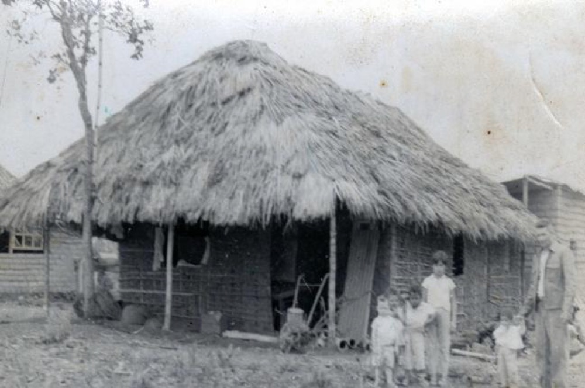
Imagem 01 - Primeira morada. Fonte: acervo fotográfico de Bona Espero.
Para o casal, viver no interior de Goiás com uma população formada por povos indígenas, em simbiose com afrodescendentes e alguns poucos de origem europeia era algo bem interessante. Ficaram deslumbrados com a maneira pausada, respeitosa pacífica e amigável com que o povo falava. Admiravam especialmente as habilidades de lidar com a terra, com os animais domésticos, de produzir sua alimentação tão diferente da que estavam acostumados.
81
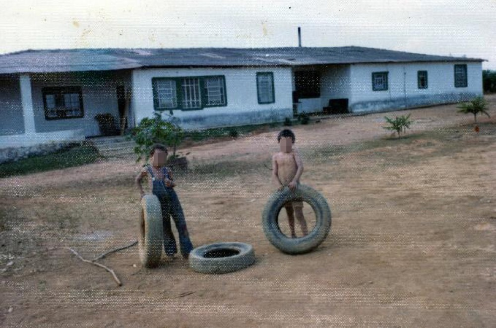
Imagem 02 - Casa de alvenaria construída após a chegada do casal Grattapaglia. Fonte: acervo fotográfico de Bona Espero.
Não foi fácil se acostumar com o ritmo da vida local sem as tecnologias da época como o rádio, a televisão, o liquidificador, o ferro de passar roupa, máquina de escrever elétrica, pois não havendo energia elétrica no local seria impossível fazer o uso de tais equipamentos. Tudo isso foi perfeitamente amenizado com a vastidão, beleza, abundância e clima encantador da Chapada dos Veadeiros e, sobretudo, do seu povo receptivo e hospitaleiro.
Da mesma forma que as crianças e suas famílias aprenderam com os voluntários, eles também incorporaram muitos aspectos da cultura goiana, que passou a ser cada vez mais frequente no cotidiano da instituição, valorizando a cultura local e desenvolvendo o jeito próprio de se adaptar ao meio. Com as crianças, aprenderam a falar a língua portuguesa e as ensinaram a língua Esperanto, não para substituir o português, mas como uma segunda língua, muito útil na comunicação com os voluntários que vieram de diversas partes do mundo.
Inicialmente aprenderam o “português goiano” do interior: nóis foi, nóis vai, nóis feiz...até que anos depois perceberam que não era a norma culta, entretanto, era possível se comunicar perfeitamente. Com as crianças aprenderam ainda a socar arroz, catar feijão, tirar leite das vacas, vacinar o gado, distinguir plantas, flores, animais, costumes da roça, e, sobretudo, aprenderam o que é conveniente e o que não é, de acordo com a tradição local.
Na alimentação foi acrescentado o pão, a pizza e os bolos feitos de trigo e assados no forno à lenha, um costume local que tiveram que adotar, pois não havia gás na região. O ato de aprender estava presente em todos os espaços e momentos, mas era na cozinha que se aprendia as delícias culturais da vida.
E por falar em aprender, o casal lembra-se da enorme vontade das crianças em querer estudar. E, mesmo com a carência de materiais básicos, como papel para escrever, não perdiam o interesse, faziam perguntas sobre tudo, e à noite, sem a diversão da TV, eram horas de conversas, de rodas de debates e histórias sob a luz do lampião a gás.
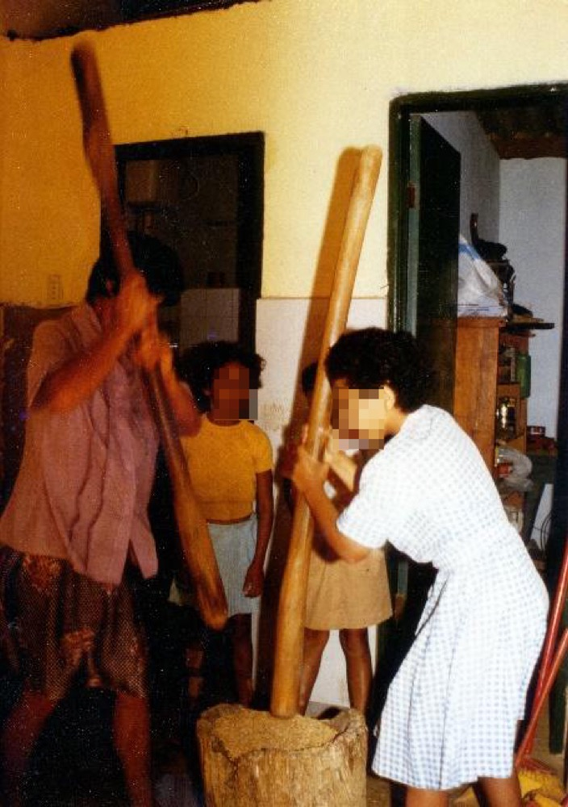
Imagem 03 - A arte de socar arroz. Fonte: acervo fotográfico de Bona Espero.
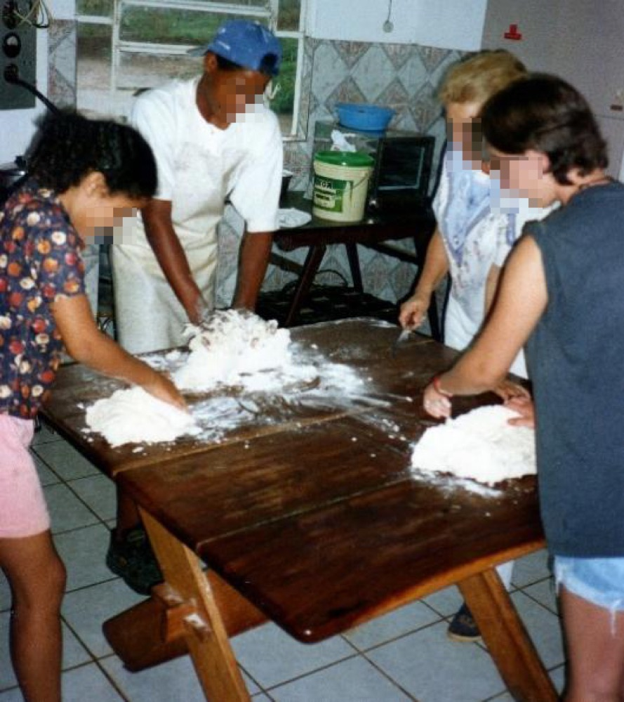
Imagem 05 - Crianças aprendendo a fazer pão. Fonte: acervo fotográfico de Bona Espero.
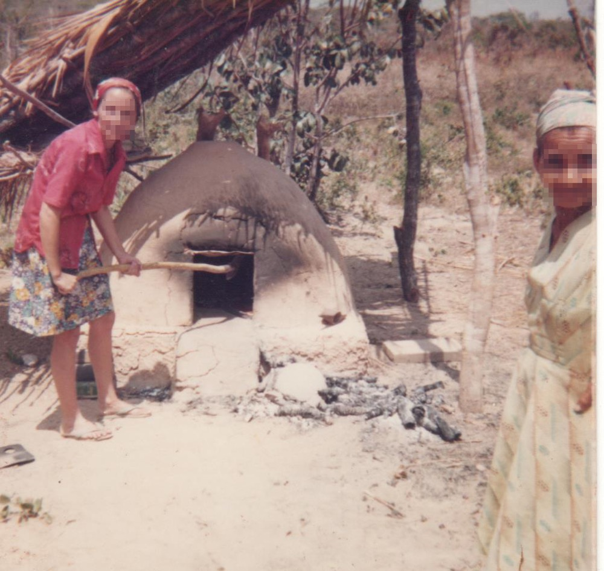
Imagem 06 - Forno a lenha, muito utilizado na época. Fonte: acervo fotográfico de Bona Espero.
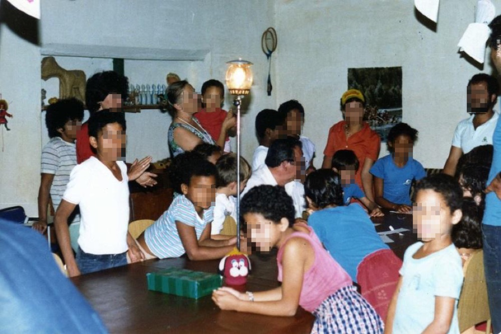
Imagem 07 - Histórias sob a luz do lampião. Fonte: acervo fotográfico de Bona Espero.
As contribuições do casal para a educação local foram além dos limites de Bona Espero. Mesmo sem reconhecimento do Estado de Goiás, nos anos 70, a pedido do prefeito local, implantaram o ginásio (segunda fase do ensino fundamental) na cidade de Alto Paraíso. Durante três anos, o casal ia toda noite dejipepara lecionar a quinta série, depois a sexta, e a sétima série para os professores e adolescentes da cidade no Colégio Moisés Nunes Bandeira.
Nunca tinha tido um ginásio nesta área do Nordeste Goiano, chamado de corredor da miséria. O projeto promoveu um salto educacional que prospera até os dias atuais, sendo de grande relevância para todos os envolvidos.
Vivemos uma experiência de grande solidariedade e ajuda mútua, que nos enriqueceu imensamente. Somos gratos a essas 800 crianças, com os quais coabitamos em simbiose, alegria, respeito recíproco, muito trabalho junto e uma aprendizagem sem par para todos. (Casal Grattapaglia, 2015).
82
Além do casal Grattapaglia, muitos outros voluntários plantaram uma sementinha e deram sua contribuição ao projeto educacional de Bona Espero e, aos poucos, as interações entre os voluntários e as crianças deram origem a formas singulares de viver na instituição.
2.3 ESTRANHAMENTO E INTERAÇÃO CULTURAL EM BONA ESPERO: EX-ALUNOS
Vindos de uma cultura tradicionalmente goiana do interior, os ex-alunos entrevistados também narram fatos interessantes que evidenciam o estranhamento cultural em relação a instituição, e aos voluntários que lá trabalhavam. Segundo seus relatos, estudar em Bona Espero foi uma grande oportunidade de entrar em contato e conhecer outras culturas praticamente sem sair de casa. No entanto, a necessidade de se adaptar um local dirigido por voluntários estrangeiros, com regras rígidas e horários bem definidos, causou certa estranheza nas crianças, que, até então, estavam acostumadas a viver em outro ritmo.
Sobre esse estranhamento, o ex-aluno AFT afirma:
Estranhei os horários bem definidos para cada refeição e as regras para alimentação. Ou sejaa minha casa eu comia tudo a qualquer hora, em Bona Espero tinha horários e quantidades. Além disso, todos tínhamos que realizar as refeições juntos. (AFT, Anexo A, 2015).
O ex-aluno B.R também achava tudo muito diferente do que ele estava acostumado, a começar pelas regras, pois, em Bona Espero, tinha horários para tudo: para comer, ir à escola, brincar, tomar banho e dormir. ão eram permitidos atrasos.
A educação, considerada pelos ex-alunos melhor da região, tinha raízes europeias. Para alguns, não foi fácil se adaptar ao sistema de ensino/educação da instituição. As aulas eram personalizadas, respeitando o ritmo de cada aluno. No entanto, respeito, bom comportamento e obrigações eram indispensáveis para a boa convivência na diversidade. Com o tempo, todos foram se adaptando e se acostumando com a realidade, pois as novidades culturais trazidas pelos voluntários fascinavam as crianças de tal modo que o estranhamento do primeiro contato passou a ter pouca relevância.
A novidade maior eram as festas e comemorações como Páscoa, Natal, e o próprio aniversário que era festejado em grande estilo com bolo, velinha e presente. O Natal era uma festa muito esperada pelas crianças e comemorada com muita alegria, mesa decorada, convidados especiais, presentes, Papai Noel, era um acontecimento que atraía além das crianças, seus familiares. Alguns sequer tinham ouvido falar em Papai Noel.
Não costumava comemorar Festa Junina, Natal, Aniversário, Páscoa... não dava muito valor à educação, preservação do meio ambiente, sem contar que tive a oportunidade de conhecer e aprender o Esperanto. (B.R.S, questionário apêndice 2, 2015)
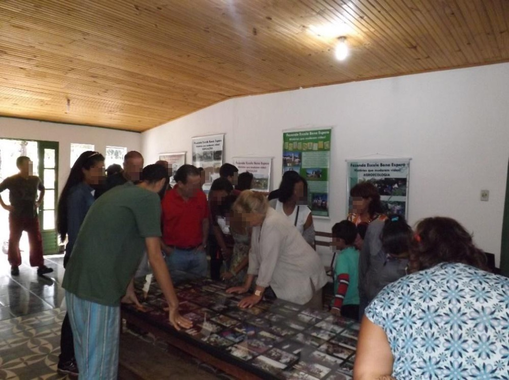
Imagem 10 - Visitantes conhecendo a Casa de Memóriade Bona Espero. Foto: Amanda Torres
Em relação à alimentação, alguns ex-alunos relataram um estranhamento no início, mas, depois, foram se acostumando e hoje sentem até saudades. Era uma alimentação que combinava arroz, feijão, com pratos típicos da culinária europeia. O hábito de comer verduras era pouco comum entre as crianças, que basicamente consumiam arroz, feijão, mandioca, batata doce, abóbora e carne.
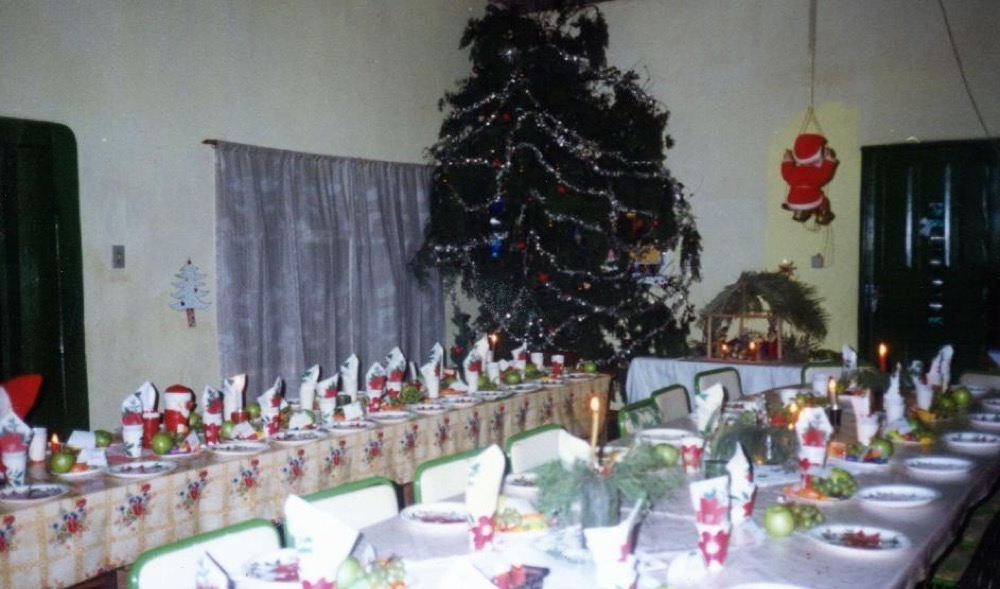
Imagem 08 - Mesa preparada para a noite de Natal. Fonte: acervo fotográfico de Bona Espero.
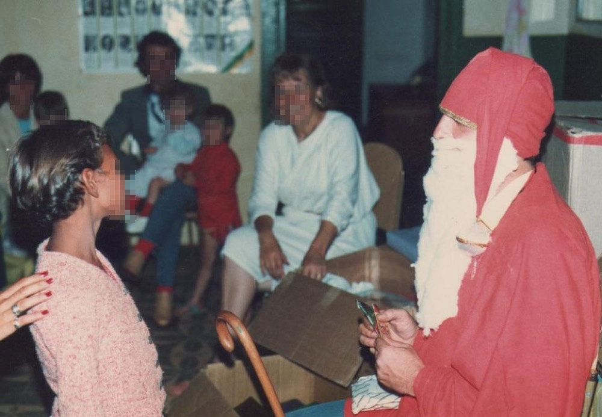
Imagem 09 - Papai Noel entregando presentes. Fonte: acervo fotográfico de Bona Espero.83
Também foi em Bona Espero que conheceram o pão integral, a pizza e bolos que não fossem feitos com milho, mandioca ou arroz. E, da mesma forma que incorporaram esses alimentos à sua cultura alimentar, os ex-alunos trouxeram e incorporaram novas receitas e alimentos ao cardápio da instituição. Além disso, muitas receitas foram desenvolvidas a fim de utilizar produtos abundantes na região, como é o caso “bolo de rede” feito com geleia de manga, goiaba e jabuticaba do quintal da instituição; e o bolo de coalhada. Ambos têm gosto de infância.
Sobre o vestuário, cabe ressaltar que, como a instituição recebia doações vindas de várias partes do mundo, as roupas que as crianças recebiam também causavam um certo estranhamento, não apenas nas crianças que tinham que vesti-las, mas, também, nas pessoas da comunidade, que estavam pouco acostumadas com aquele estilo europeu de se vestir. Às vezes a roupa era bem maior que a criança que a vestia, mas eram trajes de boa qualidade.
A educação recebida em Bona Espero, apesar de rígida, foi a mais completa que uma criança podia receber. Longe dos pais, recebiam, além do conhecimento sistematizado e ensinamentos de vida, o amor incondicional dos voluntários.
Vale lembrar que o Esperanto, como ferramenta de comunicação e ideal de igualdade e fraternidade, teve grande importância na vida das crianças que pela instituição passaram. Algumas, quando já eram adolescentes, tiveram a oportunidade de conhecer e até morar em países como o Japão, Alemanha, Itália, França por meio do Esperanto aprendido em Bona Espero.
2.5 RESULTADOS
2.5.1 Produto e Resultados da Intervenção
Os estudos demonstraram que a Fazenda Escola Bona Espero guarda um rico patrimônio cultural que merece ser divulgado. A Casa de Memória, idealizada e implantada por meio deste trabalho, constitui-se em um dinâmico e permanente instrumento de preservação e divulgação desse patrimônio, que, até então, permanecia oculto na memória das pessoas que fizeram parte da instituição. Além disso, foi possível sensibilizar as pessoas envolvidas e ligadas ao projeto a terem um novo olhar sobre o que vem a ser patrimônio e sua importância na construção e valorização da história de um povo.
O trabalho possibilitou ainda uma grande parceria da instituição (que se encontra em fase de reestruturação), com um importante projeto do Centro-UnB Cerrado, que visa ressignificar a relação do jovem com o campo por meio da agroecologia, inovação e sustentabilidade.
Tendo em conta os resultados obtidos, estamos conscientes que atingimos praticamente todos os objetivos inicialmente propostos, e que realizamos um importante trabalho no que diz respeito à memória da Fazenda Escola Bona Espero e das pessoas que pela instituição passaram.
No decorrer da pesquisa, o desafio maior não foi nem tanto encontrar os ex-alunos, mas conseguir que respondessem ao questionário em tempo hábil. Portanto, as respostas aqui apresentadas correspondem a uma quantidade mínima de informações em relação ao que se pretendia. Dessa maneira, o trabalho não se encerra com a entrega deste relatório, pois faz-se necessário uma constante coleta de dados e informações que venham compor e enriquecer ainda mais a Casa de Memória da Fazenda Escola Bona Espero.
84
3. CONCLUSÃO
Considerar que a cultura possui um caráter de aprendizado implica dizer que é na dinâmica das relações humanas que a mesma é produzida, aprendida, adquirida e também modificada. De modo que todo ser humano é capaz de aprender e produzir cultura, que, por sua vez, sofre alterações na medida em que este tenta rever e aperfeiçoar sua maneira de ser.
O trabalho realizado na Fazenda Escola Bona Espero confirma que voluntários e crianças aprenderam e produziram cultura. Uma cultura que nasceu da miscigenação de povos tão diferentes e foi ressignificada na necessidade do encontro e da convivência pacífica diante da diversidade. Ao longo do tempo, essa cultura foi se transformando, tomando formas e expressões diferentes, possibilitando a construção de uma identidade multicultural.
Resgatar esses aspectos tão peculiares de quem viveu essa experiência possibilitou, além da preservação do patrimônio cultural “bonesperano”, o contato desse patrimônio com a comunidade e com o mundo, uma vez que, desde a inauguração da Casa de Memória, em outubro de 2014, muitas pessoas, brasileiras e estrangeiras estiveram visitando o local.
Como desafios futuros, verifica-se a necessidade de manutenção e cuidados por parte das pessoas que convivem neste contexto ímpar, no sentido de proteger e divulgar esta Casa de Memória, que guarda não apenas imagens e objetos de um tempo remoto, mas, também, memórias coletivas.
REFERÊNCIAS
BRASIL. Legislação sobre patrimônio cultural. Brasília, DF: Câmara dos Deputados, Edições Câmara, 2010. 366 p. (Série Legislação; n. 41). Disponível em: <http://bd.camara.gov.br/bd/handle/bdcamara/4844>. Acesso: 15 mar. 2015. [MdF1]
FREIRE, Paulo; FAUNDEZ, Antonio. Por uma pedagogia da pergunta. v. 15. Rio de Janeiro: Paz e Terra, 1985. (Coleção Educação e Comunicação).
FRANCO. Maria Amélia Santoro. Pedagogia da pesquisa-ação. Educação e Pesquisa, São Paulo, v. 31, n. 3, p. 483-502, set./dez. 2005.
GRUNBERG, Evelina. Manual de atividades práticas de educação patrimonial. Brasília, DF: IPHAN, 2007. 24 p.; 21 cm.
INSTITUTO DO PATRIMÔNIO HISTÓRICO E ARTÍSTICO NACIONAL. Os sambas, as rodas, os bumbas, os meus e os bois: a trajetória da salvaguarda do patrimônio cultural imaterial no Brasil. Brasília, DF: IPHAN, 2006.
JEUDY, Henri-Pierre. Espelho das cidades. Rio de Janeiro: Casa das Palavras, 2005.
LARAIA, Roque de Barros. Cultura: um conceito antropológico. 14. ed. Rio de Janeiro: Jorge Zahar, 2001.
LOURENÇO, Lucília Teodora Villela de Leitgeb. Traduções e estudos culturais: estudo da tradução brasileira de The Bluest Eye, de Toni Morrison. In:III CELLMS, IV EPGL e I EPPGL–UEMS Anais eletrônicos... Dourados. 2014. Disponível em: <http://ead.ndh.ufg.br/mod/forum/view.php?id=15394/2/41>. Acesso: 10 out. 2007.
MEIRA, Ana Lúcia. O passado no futuro da cidade: políticas públicas e participação popular na preservação do patrimônio culturalde Porto Alegre. Porto Alegre: UFRGS, 2004.
85
Resgatando a memória da Fazenda Escola Bona Espero instituição educativa na zona rural do Município de Alto Paraíso de Goiás
Aluna: Cristiana Chamberlain Franco
Polo: Alto Paraíso
Orientadora Acadêmica: Maria de Fatima França Rosa
Coordenadora de orientação: Simone Rosa da Silva
Anexos
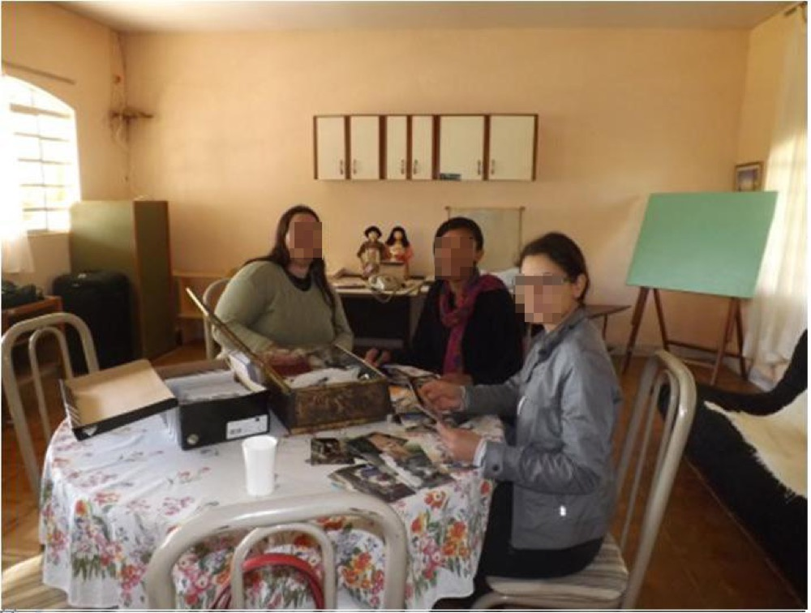
Imagem 1: Organizando as fotos da Instituição. Foto: Kauan Torres
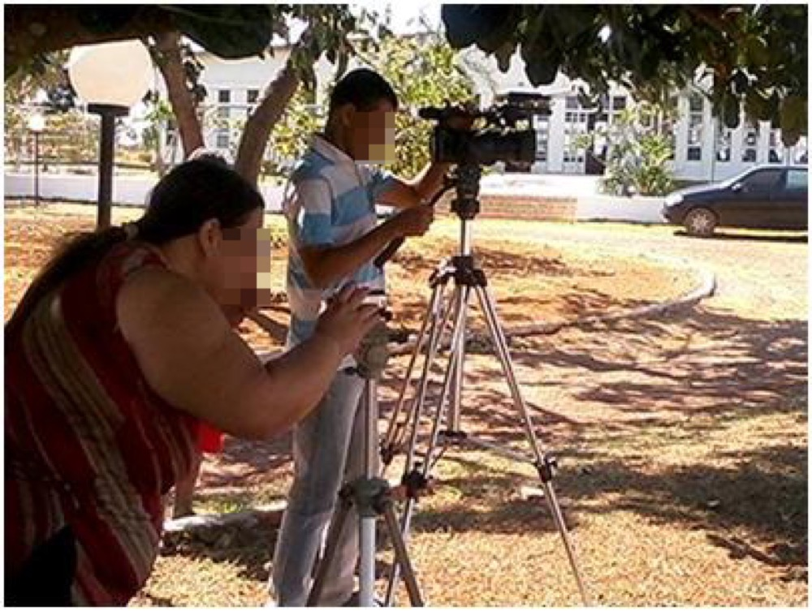
Imagem 2: Trabalho realizado pelos alunos da instituição . Foto: Cristiane da Costa Meirelles
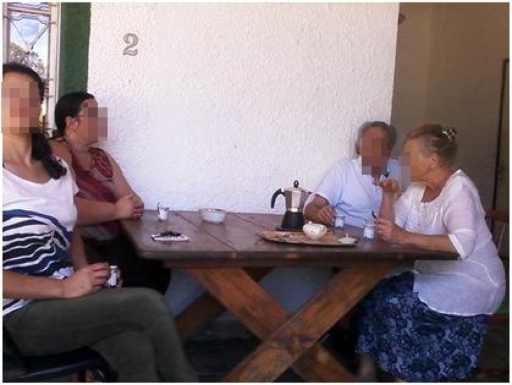
Imagem 3: Filmagem dos depoimentos. Foto: Cristiane da Costa Meirelles
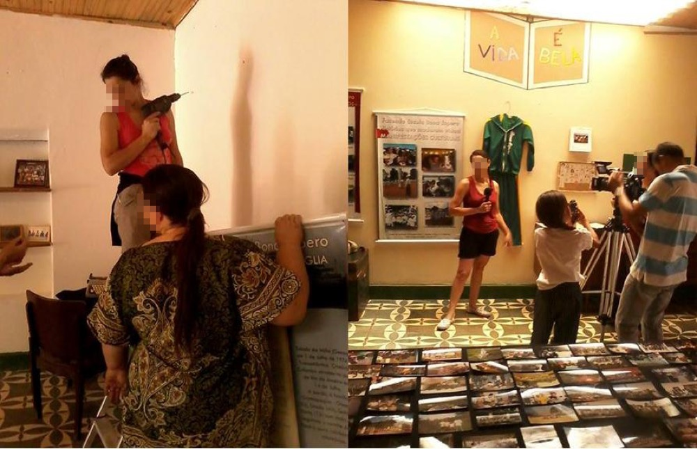
Imagem 4: Apresentação do projeto com o casal Gratapaglia. Foto: Cristiane da Costa Meirelles
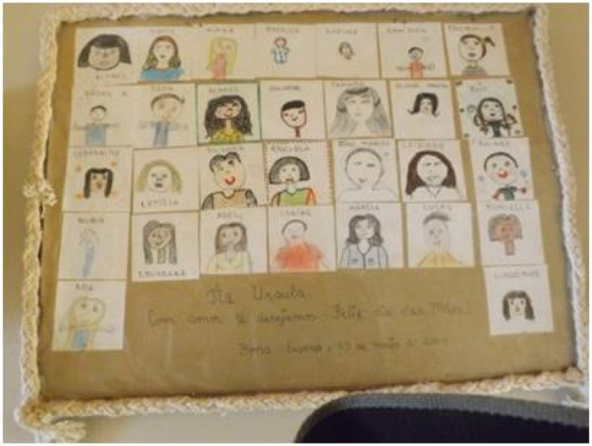
Imagem 5: Trabalho realizado pelos alunos da instituição. Foto: Cristiana Chamberlain
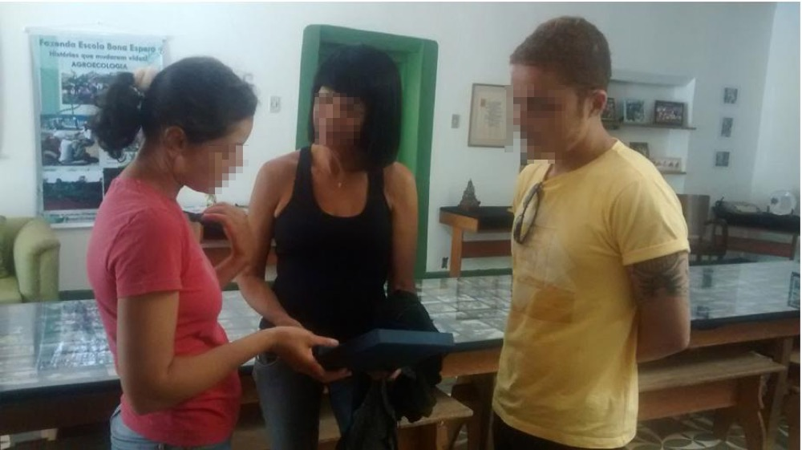
Imagem 6: Visita dos tutores Maria de Fatima e Mateus a Casa de Memória. Imagem do acervo fotográfico do Projeto. Foto: Cristiana Chamberlain
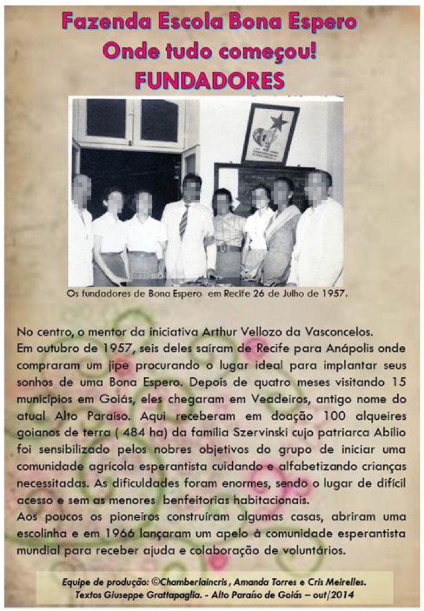
Imagem 7: Os fundadores. Banners explicativos contando a história da Bona Espero sobre diversos ângulos. Foto: Cristiana Chamberlain
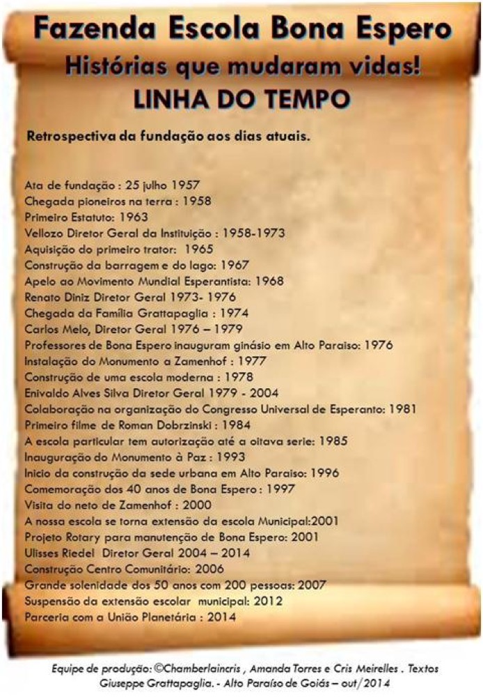
Imagem 8: Linha do Tempo. Banners explicativos contando a história da Bona Espero sobre diversos ângulos. Foto: Cristiana Chamberlain
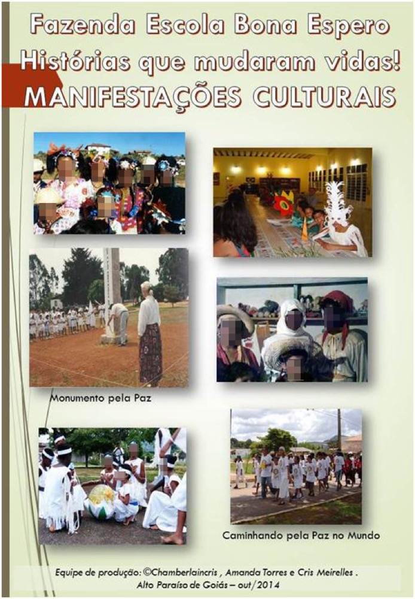
Imagem 9: Manifestações culturais. Banners explicativos contando a história da Bona Espero sobre diversos ângulos. Foto: Cristiana Chamberlain
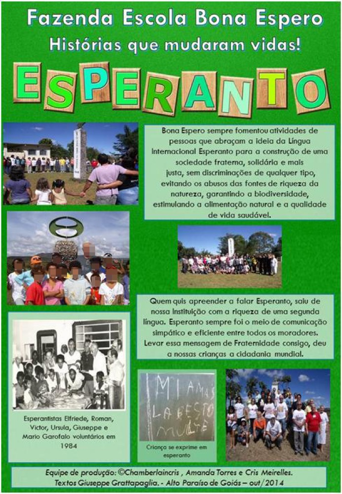
Imagem 10: Esperanto. Banners explicativos contando a história da Bona Espero sobre diversos ângulos. Foto: Cristiana Chamberlain
1. INTRODUÇÃO
Localizado no Nordeste Goiano, na Chapada dos Veadeiros, ponto mais alto do Planalto Central - Pouso Alto a 1.676 metros de altura - o município de Alto Paraíso de Goiás encontra-se a 230 quilômetros de distância de Brasília e a 420 quilômetros de Goiânia. Passou a pertencer ao território da Cidadania Chapada dos Veadeiros (GO), em 31 de julho de 2008, o que vem fortalecendo a cada dia a cidade na busca pelo desenvolvimento territorial.
Possui território com área de 2.594 km², cuja densidade demográfica é de (hab./km2) 2,65, possuindo uma população de aproximadamente 7.262 habitantes, de acordo com dados do Instituto Brasileiro de Geografia e Estatística (IBGE), em 2014.
Alto Paraíso é considerado patrimônio natural mundial pela Organização das Nações Unidas para Educação, Ciência e Cultura (UNESCO) reconhecimento adquirido pelo seu valioso santuário ecológico, que possui rica fauna e flora típicas da vegetação predominante do Cerrado. Estas características atraem turistas e pesquisadores do mundo inteiro.
No entanto, Alto Paraíso é muito mais do que um santuário ecológico, é sua gente, sua história. O projeto de intervenção realizado procurou recuperar, ainda que de forma minimalista, a história de pessoas que, sozinhas ou dentro de algum grupo institucional, contribuíram no processo educativo de tantas crianças, jovens e adultos moradores da Região do Território da Cidadania da Chapada dos Veadeiros-GO , tendo como instituição “piloto ” a Fazenda Escola Bona Espero. Portanto, todo o seu desenvolvimento, a ser apresentado abaixo, relaciona-se a esta instituição.
O governo federal lançou, em 2008, o Programa Territórios da Cidadania. O Territórios da Cidadania tem como objetivos promover o desenvolvimento econômico e universalizar programas básicos de cidadania por meio de uma estratégia de desenvolvimento territorial sustentável. Disponível em: <http://www.territoriosdacidadania.gov.br>. Acesso em: 18 ago. 2015.
Existem ainda no município de Alto Paraíso de Goiás outras instituições que teve importante papel na área de educação da cidade e que, futuramente, poderia ter sua história recuperada.
86
Em 12 de dezembro de 1953 pelo Decreto Estadual nº 808, ainda com o nome de Veadeiros, Alto Paraíso foi elevado à categoria de município, desmembrando-se de Cavalcante e, em termos judiciários, pertencendo à Comarca de Formosa.
Três anos após a emancipação política da Vila Veadeiros (denominada, posteriormente, de Alto Paraíso), chegou de jipe um grupo de seis pessoas procurando um lugar adequado para fundar uma Sociedade Educacional Esperantista; o ano era 1957. Os seis idealistas haviam recebido em Recife orientação espiritual sobre o objetivo daquele trabalho e sua localização no centro do País. Os integrantes desta proposta chamavam-se: Arthur Velloso, Renato Diniz, Neusa Esteves de Araújo, Elisabeth Pointcaré, Inês Nunes de Andrade e Camélia Gomes da Silva,
Alto Paraíso não foi a primeira opção do grupo, eles procuraram em várias cidades do Estado: Catalão, Niquelândia, Anápolis, Formosa e Goiânia. Mas, depois, os fundadores foram guiados a conhecer o ponto mais alto do planalto central brasileiro, na latitude 14 ao sul do Equador. A família Szerwinski, oriunda da Polônia, possuidora de vasta região na Chapada dos Veadeiros, captou imediatamente a finalidade nobre do projeto e, sem hesitação, doou um terreno com cerca de 500 hectares. Ali foi construída a “Mansão Bona Espero” (primeiro nome da instituição).
Nos anos seguintes a instituição adquiriu mais 500 hectares, mudou o nome para Fazenda Escola Bona Espero, que aparece agora no mapa oficial do Estado de Goiás; e define seus objetivos estatutários: de modo geral, Bona Espero é uma instituição filantrópica, sem fins lucrativos, reconhecida de utilidade pública municipal e estadual, registrada no Conselho de Assistência Social.
Professores e colaboradores eram quase que exclusivamente esperantistas voluntários, brasileiros e estrangeiros que viveram com as crianças os valores comuns, éticos, morais e espirituais, baseados na concepção de que liberdade, igualdade e fraternidade são somente meios para atingir o fim nobre do conhecimento, justiça e amor. Nesse quadro o uso do esperanto , embora não priorizado na educação das crianças, foi essencial para sua comunicação com os voluntários estrangeiros, e para abrir-lhes novos horizontes culturais.
O esperanto é uma língua auxiliar para a comunicação internacional, de aprendizado rápido e fácil. Iniciado em 1887 pelo médico polonês Dr. Lázaro Luís Zamenhof. É essencialmente um idioma neutro, não fazendo parte de nenhuma hegemonia sendo, portanto, um eficiente instrumento para a preservação de todas as línguas e culturas do globo e para a promoção da igualdade entre os povos. A principal proposta do esperanto é a de que cada povo continue a falar sua própria língua materna e possa, conjuntamente, fazer uso de um idioma neutro nas comunicações internacionais.
Durante 50 anos de existência, “Bona Espero” tem se esforçado continuamente para se integrar com os habitantes da região, educando as novas gerações e colaborando ativamente para o progresso local. Cabe ressaltar, ainda, que Bona Espero, nas figuras de Úrsula e Giusepe Grattapaglia, representa um marco na história da educação de Alto Paraíso de Goiás, pois, graças à garra e determinação do casal, que foi implantado o ginásio (ensino fundamental II) para que os professores, que até então possuíam apenas a 4ª série, pudessem melhorar sua escolarização e, com isso, possibilitar a continuidade da educação no município.
87
A comunidade esperantista internacional definiu Bona Espero como “uma proposta concreta de modelo de vida conforme antigos valores em tempos modernos”, e o fato dela estar ligada ao esperanto, elevou notavelmente o prestígio da língua internacional em muitos meios.
A partir de todo este contexto histórico levantou-se a seguinte problemática: qual a importância de se organizar o registro da memória da Fazenda Escola Bona Espero enquanto instituição educativa proeminente na Região do Território da Cidadania da Chapada dos Veadeiros?
Reconhece-se a necessidade de adotar medidas para resgatar, proteger e organizar o patrimônio cultural da Fazenda Escola Bona Espero, não somente porque ela é um marco na educação do município, mas, também, pelo fato de fortalecer a identidade local e o sentimento de pertencimento do grupo de alunos que compartilha desse patrimônio. Portanto, este projeto se justifica na medida em que possibilitará a preservação dos valores e da formação cultural “bonesperana”, bem como sua interação com a comunidade e com o mundo.
2. DESENVOLVIMENTO
2.1. OBJETIVOS
GERAL
Resgatar, registrar e divulgar a história e as contribuições da Fazenda Escola Bona Espero, no município de Alto Paraíso de Goiás, desde a sua fundação em 1957, fomentando na cidade um efeito multiplicador sobre o valor das memórias.
ESPECÍFICOS
Digitalizar todos os documentos, fotos, cartas entre outros materiais para construção do acervo digital;
Registrar as narrativas por meio de entrevistas com os moradores da Bona Espero e demais pessoas que, de uma forma ou de outra, estiveram envolvidas na instituição, como, por exemplo, ex-alunos, pais, membros da comunidade;
Implantar o espaço cultural dentro da instituição, aberto a visitantes;
Divulgar a história de Bona Espero de forma correta e verídica, permitindo sua ampla divulgação na web e demais meios de comunicação, permitindo inclusive futuras publicações;
Identificar e registrar, por meio de entrevistas, o estranhamento dos nativos da região, pais, parentes (ou não) dos alunos, frente às crianças que incorporaram as diversas culturas que eram trazidas a partir dos voluntários (hábitos, alimentação, vestuário, etc).
2.2 REFERENCIAL TEÓRICO
Em nossa atualidade, a ação da preservação da memória deixou de ser restrita aos historiadores. Sendo assim, cada sujeito passa a ser historiador não apenas de si mesmo, mas, também, do grupo em que está inserido. Nesta nova visão, a cultura começa a perder sua característica hegemônica e a valorização do patrimônio imaterial de grupos sociais anteriormente marginalizados começa a ser uma constante.
O fenômeno do etnocentrismo é explicado na literatura antropológica como referência aos termos auto designativos utilizados por vários povos para falarem de si próprios. Nos discursos de cada povo, o seu próprio grupo é destacado como os representantes dos mais legítimos dos seres humanos, como a referência mais forte de cultura e de sociedade e, por isso mesmo, defendida como sendo a mais coerente, a mais certa. (LEITÃO, 2014, p.9)
O Artigo 216 da Constituição Brasileira, nos oferece o entendimento do que vem a ser o Patrimônio Cultural Imaterial Brasileiro: “bens de natureza material e imaterial, tomados individualmente ou em conjunto, portadores de referência à identidade, à ação, à memória dos diferentes grupos formadores da sociedade brasileira”, nos quais se incluem:
I - as formas de expressão;
II - os modos de criar, fazer e viver;
III - as criações científicas, artísticas e tecnológicas;
IV - as obras, objetos, documentos, edificações e demais espaços destinados às manifestações artístico-culturais;
V - os conjuntos urbanos e sítios de valor histórico, paisagístico, artístico, arqueológico, paleontológico, ecológico e científico. (BRASIL, 2010, p. 139 -140).
88
A partir daí passamos a ter a noção do que vem a ser o nosso patrimônio e que, realmente, somos possuidores e devemos zelar por nossa cultura. Segundo o Instituto do Patrimônio Histórico e Artístico Nacional (IPHAN/2006), não há dúvida quanto a existência de uma falsa dicotomia entre esses bens culturais vivos e o chamado patrimônio material, que as expressões patrimônio imaterial e bem cultural de natureza imaterial reforçam.
Para Leitão (2014), devemos compreender as culturas como sistemas cognitivos, cuja análise baseia-se em modelos construídos pelos indivíduos de uma mesma comunidade a respeito de seu próprio universo, “cultura seria tudo aquilo que alguém tem de conhecer ou acreditar para operar conscientemente e de maneira coerente no contexto de sua sociedade” (LARAIA, 1984, p. 62 apud LEITÃO, 2014, p.6).
Lourenço (2014) nos mostra a existência de uma percepção crítica em relação às antigas correntes do pensamento moderno ocidental. Estas, tradicionalmente, contemplavam uma educação para as classes possidentes, não apenas economicamente como também de poder cultural. Sobre este tema, Leitão (2014) nos leva a respeitar e a valorizar a diversidade cultural passando a considerar de forma positiva todas as suas manifestações ao demonstrar a existência de possibilidades que nos levam a enxergar o mundo partir de outras perspectivas, ou de outros pontos de vista, além daqueles nos quais fomos culturalmente socializados.
Sendo a cultura dinâmica e fruto de uma rede de relações que os indivíduos estabelecem enquanto sistema social, perpetua-se e reproduz-se através da socialização dos novos membros que entram no grupo. A partir deste pensamento e sabendo-se que a Bona Espero é mais do que uma instituição local, a fazenda, e o trabalho por ela realizado, assumiram status de mundial devido a toda sua história estar intrínseca à cultura esperantista.
Portanto, por estar ligada a pessoas de todo o mundo é que se faz necessário resgatar a memória da instituição não apenas de forma local, mas já visando sua colocação Word Wide Web, como uma forma de proporcionar que esta história alcance o mundo de uma forma mais organizada. Atualmente, sua história aparece de forma desfragmentada, espalhada em sites específicos de esperanto, no facebook ou, ainda, em blogs de terceiros.
Segundo Lisboa (2014), a “abordagem sobre a condição cultural que o novo espaço antropológico da internet proporcionou as populações em rede” inicia-se ao se tentar captar o conceito de cibercultura que é a simbiose entre a “sociedade, a cultura e as novas tecnologias de base micro-eletrônica” (LEMOS, 2003, p. 12 apud LISBOA, 2014, p.10). Sendo assim, as “mídias digitais são instrumentos que devem ser utilizados para que a cidadania seja exercida em sua plenitude”.
Este fato, ligado àintensa globalização que vem ocorrendo no planeta, em grande parte devido ao avanço tecnológico, aproximou as fronteiras entre os povos e suas culturas. Tal fato se deu por meio da mídia dominante, cuja programação influencia ao consumismo, enfatizando a cultura das classes dominantes. No entanto, pode-se observar que quanto mais as novas tecnologias diminuem as fronteiras entre os países, mais a própria identidade e história caem no esquecimento.
O fenômeno da comunicação é categorizado como o fundamento primordial para a vida social e a construção das relações entre as diferentes comunidades. No entanto, o advento dos meios de comunicação de massa acabou por centralizar a emissão da informação por dois motivos: vide as características natas dos meios, como o jornal impresso, os cartazes, o rádio e a televisão, combinado com a concepção unilateral que alguns grupos de comunicação aplicam em suas programações com objetivo de manipular as pessoas para a obtenção de fins econômicos. (LISBOA, 2014, p.6)
89
Por outro lado, a partir do momento em que se começa a discutir e compreender a importância de se preservar a memória e a história de um povo ou de um lugar dá-se início à concretização da preservação destas memórias, possibilitando uma maior aproximação do grupo com seu patrimônio cultural, que de acordo com a Constituição Federal:
[...] é formado por bens de natureza material e imaterial, tomadas individualmente ou em conjunto, portadores de referência à identidade, à ação, à memória dos diferentes grupos formadores da sociedade brasileira, nos quais se incluem: I – as formas de expressão; II – os modos de criar, fazer e viver; III – as criações científicas, artísticas e tecnológicas; IV – as obras, objetos, documentos, edificações e demais espaços destinados às manifestações artísticoculturais;V – os conjuntos urbanos e sítios de valor histórico, paisagístico, artístico, arqueológico, paleontológico, ecológico e científico. (Artigo 216 da Carta Fundamental do Brasil) (BRASIL, 1988, p. 35).
O patrimônio tem muitas e variadas relações com a identidade. Como elemento fundamental em sua construção ele é sua própria materialização. Além disso, considera-se o patrimônio como expressão da identidade histórica e vivenciada por um povo (OLIVEIRA; KUNZLER, 2014, p.15.).
Assim, o resgate da história e do patrimônio cultural construído ao longo dos anos na Fazenda Escola Bona Espero favorece, além da preservação desse patrimônio, o despertar do sentimento de identidade, possibilitando a continuidade cultural, uma vez que conecta o passado e o presente. Pois, preservar não é somente guardar um bem, é manter vivos os usos e costumes de um povo, mesmo que com alterações (LEMOS, 1981).
Bona Espero foi e é o ponto de encontro de muitas culturas que se comunicaram por meio do idioma Internacional esperanto. A cultura esperantista foi usada pelos fundadores como instrumento capaz de amenizar o estranhamento cultural, que ocorria entre as crianças atendidas na instituição e os voluntários das mais diversas partes do mundo que vinham colaborar com a instituição. Desta forma, dando origem a identidades, por meio de memórias culturais de características próprias que abarcam as formas de manifestações linguísticas, de relacionamento, de trabalho com a terra, de culinária, dentre outros, que demonstram a riqueza da relação entre identidade e diversidade da cultura formada neste lugar.
Para alcançar os objetivos propostos neste trabalho, optou-se por realizar também a análise documental com o recolhimento de vários documentos desde atas, cartas, matérias de jornal, até documentos produzidos pelos alunos que frequentaram a instituição, além das fotos, livros e filmes antigos.
Segundo os autores Lüdke e André (1986, p. 38-39), “[...] a análise documental pode se constituir numa técnica valiosa de abordagem de dados qualitativos [...]”. Por meio de análise dos documentos o pesquisador se depara com uma importante fonte que permite a retirada de evidências complementares às informações obtidas por outras técnicas de coleta e que corroborem suas afirmações e declarações.
Portanto, a presente intervenção adaptou a metodologia da pesquisa-ação para o seu desenvolvimento, envolvendo atividades que visavam reunir e preservar o acervo cultural e a memória da Fazenda Escola Bona Espero de forma organizada, visando ações interventivas que preservassem a memória local e a disponibilizasse à comunidade. Ou seja, um estudo que pressupõe a integração dialética entre o sujeito e sua existência; entre fatos e valores; entre pensamento e ação; e entre pesquisador e pesquisado (FRANCO, 2005, p. 06).
90
A cultura não é só a manifestação artística ou intelectual que se expressa no pensamento. A cultura manifesta-se, sobretudo, nos gestos mais simples da vida cotidiana. Cultura é comer de modo diferente, é dar a mão de modo diferente, é relacionar-se com o outro de outro modo (...). Cultura para nós são todas as manifestações humanas; inclusive o cotidiano, e é no cotidiano que se dá algo essencial: o descobrimento da diferença. (FREIRE & FAUNDEZ, 1985, p.34).
Aqui, é importante destacar que a metodologia da história oral possui grande importância para o projeto, por meio da realização de entrevistas e depoimentos com pessoas relacionadas à história da instituição. Por fim, foram realizadas atividades de interação e socialização dos resultados e produtos construídos a partir da rica cultura produzida na Fazenda Escola Bona Espero.
2.3 METODOLOGIA
Para atingir os objetivos propostos no projeto, iniciou-se o trabalho pelo levantamento bibliográfico e documental sobre a Fazenda Escola Bona Espero. Somando-se a essas informações, foi realizado o trabalho de campo para a implantação da Casa de Memória da instituição, utilizando diversos instrumentos metodológicos tais como: levantamento fotográfico, entrevistas, questionários, reuniões com as partes envolvidas, registro audiovisual, entre outros.
A fim de atender aos objetivos, o primeiro passo foi a definição das metas e do cronograma. Em seguida, a organização do roteiro de trabalho, a formação de parcerias, bem como a definição das atividades e de seus responsáveis e da agenda de execução das atividades, em observância ao cronograma.
Tais atividades consistiram em realizar ações de resgate da memória, como pesquisa documental, entrevistas eventos de interação, entre outros, bem como realizar ações de organização da memória, com a realização de estudos e aplicação das tecnologias da comunicação.
A ideia de manter viva a cultura e a tradição da Escola Bona Espero, bem como divulgá-la, é imprescindível, não somente porque representa um marco na história da educação do município de Alto Paraíso, mas, sobretudo, pelas “manifestações humanas” ali partilhadas.
2.4 PROCEDIMENTOS
2.4.1 Recursos Humanos, Materiais e Financeiros
A equipe que desenvolveu este projeto foi formada por três alunas do curso de especialização interdisciplinar em Patrimônio, Direitos Culturais e Cidadania, moradoras do munícipio de Alto Paraíso (GO) e ligadas à educação, bem como sua orientadora e demais parcerias.
Alunas:
Amanda Torres – Pedagoga formada pela Universidade de Brasília/UnB professora e membro colaboradora pesquisadora do Centro de Estudos do Cerrado da Chapada dos Veadeiros - UnB Cerrado - CV: http://lattes.cnpq.br/5232034400619045;
Cristiana Chamberlain – Comunicadora formada pelo Instituto de Ensino Superior de Joinville (SC), professora e membro colaboradora e pesquisadora do Centro de Estudos do Cerrado da Chapada dos Veadeiros - UnB Cerrado - CV: http://lattes.cnpq.br/3883094079769384;
Cristiane Meireles – Formada em Letras pela Universidade de Brasília/UnB e pesquisadora do Centro de Estudos do Cerrado da Chapada dos Veadeiros - UnB Cerrado - CV: http://lattes.cnpq.br/3104944767884670;
Orientadora Acadêmica (tutora):
Maria de Fátima França Rosa — Licenciada em Artes Visuais (2006) e bacharel em Artes Plásticas (2010), pela Faculdade De Artes Visuais/UFG. Especialista em Arte, Educação e Tecnologias Contemporâneas, pela Universidade Nacional de Brasília/UnB (2010). CV: http://lattes.cnpq.br/3615737969585145
Parcerias:
União Planetária - Organização Não Governamental sem fins lucrativos, qualificada pelo Ministério da Justiça como uma Organização da Sociedade Civil de Interesse Público – OSCIP e que atua desde 1997.
A UNIÃO PLANETÁRIA - Tem como objetivo principal a defesa dos ideais das Nações Unidas de fraternidade universal, de paz mundial, de justiça social. Tal postura implica em trabalhar pelo fim da miséria e de todos os males sociais, através da busca por estabelecer novos paradigmas a partir de valores éticos, morais, culturais, sociais, assistenciais, econômicos, ambientais e espirituais cada vez mais elevados. Desenvolve projetos nas áreas social, educacional, ambiental e comunicação em todo o país, disseminando exemplos positivos, iniciativas de sucesso e os resultados produzidos pela convicção daqueles que não perderam a esperança na humanidade.
Fazenda Escola Bona Espero – instituição sede do projeto.
Centro de Estudos do Cerrado da Chapada dos Veadeiros - UnB Cerrado.
91
2.4.2 Cronograma
As atividades foram iniciadas por meio do levantamento bibliográfico e coleta de dados. Em seguida, realizou-se a análise desses dados e, logo após, a digitalização de fotos e documentos disponibilizados pela instituição.
O registro audiovisual, as entrevistas, catalogação e organização do acervo foram importantes instrumentos utilizados neste projeto de intervenção, para que as memórias individuais e coletivas também permaneçam preservadas e acessíveis. Na etapa final do projeto foi feita a exposição dos resultados, aberta ao público interessado.
O projeto foi desenvolvido pelo período de 5 (cinco) meses. Inicialmente foram trabalhadas in loco 16 horas semanais, e mais 14 horas fora da instituição, totalizando 30 horas.
O projeto não recebeu subsídios externos para a sua intervenção; mudanças e ajustes de atividades devido ao custeio também foram previstas. Para que as primeiras ações fossem realizadas se fez necessário que estivessem presentes na Bona Espero o casal Úrsula e Joseph Grattapaglia. Outro ponto que foi levado em consideração foi o cronograma de eventos da instituição e fatores climáticos, como a chuva, que interferiu na ida até a instituição devido ao aumento das águas do rio, visto que a Fazenda Bona Espero está localizada em uma área rural.
2.4.2 Intervenção - Ações Educativas
Durante a intervenção foi organizado o conjunto de todos os elementos necessários à aplicação do projeto de intervenção. Os recursos foram divididos em: humanos (equipe e parceiros), financeiros e materiais (permanentes e de consumo). Foram caracterizadas as fontes de financiamento que, no caso deste projeto específico, são apenas internas.
Os recursos humanos usados para a mão de obra, ou seja, as alunas e o operador de câmera (com o seu equipamento usual), cedido pela parceira União Planetária, que também custeou os materiais usados na casa de memória e que se encontram explicitados na planilha de custos.
A aluna Amanda usou seu carro próprio e custeou o combustível. A aluna Cristiana, como representante do Centro UnB Cerrado, ofereceu equipamentos (material permanente - escâner, máquinas fotográficas, etc.).
A parceira Bona Espero ofereceu, como contrapartida, alimentação, energia, água, etc. A aluna Cristiane ficou responsável pelo empréstimo do notebook, a ser usado durante as pesquisas, e da câmera e gravador reserva. Durante todo o processo da intervenção, as principais atividades realizadas foram:
Catalogação e separação de fotos seguindo essa categorização: agroecologia, educação, eventos, voluntários, construções. Na sequência, as fotos foram digitalizadas com a intenção de, num segundo momento, com a permissão da instituição, serem divulgadas na internet.
Foram criados banners contando pontos principais da história de Bona Espero. Estes banners foram construídos de forma conjunta, com a participação do casal Úrsula e Joseph Grattapaglia.
Gravação de depoimentos dos ex-alunos que estiveram presentes na abertura da casa de memória. Estes depoimentos serão editados e entregues para a instituição. A proposta é que em 2016 a União Planetária invista em um televisor que ficará passando estes depoimentos para serem assistidos pelos futuros visitantes. Devido ao curto espaço de tempo e a necessidade de se dar prioridade a organização da casa de memória, as gravações ainda se encontram em estado bruto, aguardando a edição.
Análise documental de vários documentos oficiais, como atas, contratos e cartas, além de alguns materiais feitos pelos alunos em sala de aula, como livretos, poesias, jornais, desenhos, etc.
Captação de objetos importantes, tais como mimeógrafos, uniformes, telefone, a primeira máquina de escrever, usada para escrever a carta enviada pelo casal ao Brasil avisando da sua chegada na Bona Espero, bonecos japoneses doados pela embaixada japonesa, troféus, medalhas, vídeos e livros; todos contando uma parte da história da instituição. Também foi realizada a recuperação de um dos primeiros móveis trazidos de Brasília para a Bona Espero.
O processo foi finalizado com a implantação da casa de memória - Verda Klubo (Clube Verde), nome escolhido pela dona Úrsula. A casa de memória foi alocada em uma sala na primeira construção feita na instituição. Foram dispostos os banners nas paredes, as fotos, objetos.
92
2.5 RESULTADOS
2.5.1 Produtos e Resultados da Intervenção
Ao término do projeto de intervenção os seguintes resultados foram conseguidos pela equipe: implantação da Casa de Memória, comprovando a existência do rico patrimônio que a Fazenda Escola Bona Espero guarda e que merece ser divulgado e conservado. A Casade Memória, idealizada e implantada por meio deste projeto, foi uma pequena forma de agradecimento da equipe pelo enorme trabalho realizado pelos fundadores, continuado pelo casal Grattapaglia e por todos os voluntários que passaram pela instituição. Constituindo-se, portanto, em um instrumento dinâmico e permanente não apenas da preservação da história, mas também de divulgação desse patrimônio que, até então, permanecia oculto na memória das pessoas que dele fizeram parte.
Além disso, foi possível sensibilizar as pessoas envolvidas e ligadas ao projeto a terem um novo olhar sobre o que vem a ser patrimônio e sua importância na construção e valorização da história de um povo.
O trabalho possibilitou ainda uma grande parceria da instituição (que se encontra em fase de reestruturação) com um importante projeto do Centro-UnB Cerrado, que visa ressignificar a relação do jovem com o campo por meio da agroecologia, inovação e sustentabilidade.
Tendo em conta os resultados obtidos, estamos conscientes que atingimos praticamente todos os objetivos inicialmente propostos e que realizamos um importante trabalho no que diz respeito à memória da Fazenda Escola Bona Espero e das pessoas que pela instituição passaram.
3. CONSIDERAÇÕES FINAIS
Considerou-se que o trabalho realizado, de fato, contribuiu em muito para a preservação da memória da Fazenda Escola Bona Espero. Abaixo um pequeno recorte do que a equipe atingiu
Valorização da história de vida das pessoas que passaram pela instituição, por meio da apresentação ao município a história da Fazenda Escola Bona Espero de forma verídica, mostrando para a população a sua importância para o município. Sendo Alto Paraíso uma cidade turística, a criação da casa de memória poderá se tornar mais um ponto de visitação, acoplado às belezas naturais, não ficando restrito à própria fazenda, mas a toda a região.
Embora a implantação da casa de memória já tenha acontecido e a mesma esteja aberta à visitação pública, o projeto ainda não acabou. Em conversação com a União Planetária, que atualmente é parceira da instituição onde o projeto foi desenvolvido, ficou acordado que a cada ano se faria uma ampliação, a princípio com o apoio financeiro da própria instituição, mas já se cogitou a busca por novas fontes em órgãos próprios para este fim.
A Fazenda Escola Bona Espero conta com um quadro de funcionários formado não apenas por pessoas contratadas no município de Alto Paraíso, mas, também, recebe voluntários de várias partes do mundo, sendo estas pessoas que atualmente estão cuidando da casa de memória.
Entre outras ideias de ampliação do trabalho, pretende-se construir um acervo digital, devido a Bona Espero estar ligada ao esperanto e ser, portanto, uma instituição que recebe visitantes do mundo todo. Desta forma, seria facilitado o acesso à casa de memória, permitindo sua ampla divulgação na web e demais meios de comunicação, permitindo inclusive futuras publicações.
FRANCO. Maria Amélia Santoro. Pedagogia da pesquisa-ação. Educação e Pesquisa, São Paulo, v. 31, n. 3, p. 483-502, set./dez. 2005.
FREIRE, Paulo; FAUNDEZ, Antonio. Por uma pedagogia da pergunta. v. 15. Rio de Janeiro: Paz e Terra, 1985. (Coleção Educação e Comunicação).
INSTITUTO DO PATRIMÔNIO HISTÓRICO E ARTÍSTICO NACIONAL. Os sambas, as rodas, os bumbas, os meus e os bois: a trajetória da salvaguarda do patrimônio cultural imaterial no Brasil. Brasília, DF: IPHAN, 2006.
LARAIA, Roque de Barros. Cultura: um conceito antropológico. 14. ed. Rio de Janeiro: Jorge Zahar, 2001.
LOURENÇO, Lucília Teodora Villela de Leitgeb. Traduções e estudos culturais: estudo da tradução brasileira de The Bluest Eye, de Toni Morrison. In:III CELLMS, IV EPGL e I EPPGL–UEMS Anais eletrônicos... Dourados. 2014. Disponível em: <http://ead.ndh.ufg.br/mod/forum/view.php?id=15394/2/41>. Acesso: 10 out. 2007.
LUDKE, Menga e MARLI, André Pesquisa em educação: abordagens qualitativas. São Paulo: EPU, 1986.
Resgatando a memória da Fazenda Escola Bona Espero
Aluna: Cristiane da Costa Meireles
Polo: Alto Paraíso
Orientadora Acadêmica: Maria de Fatima França Rosa
Coordenadora de orientação: Simone Rosa da Silva
1. INTRODUÇÃO
O município de Alto Paraíso de Goiás localiza-se no Nordeste Goiano, na Chapada dos Veadeiros, no ponto mais alto do Planalto Central - Pouso Alto, com 1.676 metros de altura. Encontra-se a 230 quilômetros de distância de Brasília e a 420 quilômetros de Goiânia.
Sua população, segundo o Instituto Brasileiro de Geografia e Estatística – IBGE era de 7.262 habitantes em 2013. Ainda de acordo com o IBGE, a área do município tem 2.594 km² e sua densidade demográfica (hab./km2) é de 2,65. O município de Alto Paraíso de Goiás passou a pertencer ao território da Cidadania Chapada dos Veadeiros (GO) desde 31 de julho 2007.
Alto Paraíso é reconhecido por seu valioso santuário ecológico, fauna e flora típicas da vegetação predominante do Cerrado. A cidade é considerada um patrimônio natural mundial pela Organização das Nações Unidas para Educação, Ciência e Cultura (UNESCO). Alto Paraíso atrai turistas do mundo inteiro, desde aqueles que buscam descanso em meio às belezas naturais e tranquilidade junto ao astral místico que envolve a cidade, até os que estão atrás de aventuras radicais em interação com a natureza.
Em 1957, somente três anos após a emancipação política da Vila Veadeiros (denominada posteriormente Alto Paraíso), chegou de jipe um grupo de seis idealistas procurando um lugar adequado para fundar uma Sociedade Educacional Esperantista. Tratava-se de: Arthur Velloso, Renato Diniz, Neusa Esteves de Araújo, Elisabeth Pointcaré, Inês Nunes de Andrade e Camélia Gomes da Silva, que receberam em Recife orientação espiritual sobre o objetivo daquele trabalho e sua localização no centro do País.
Após a procura em várias cidades do Estado de Goiás, como Catalão, Niquelândia, Anápolis, Formosa e Goiânia, os fundadores da “Mansão Bona Espero” (primeiro nome da instituição) foram guiados a conhecer o ponto mais alto do planalto central brasileiro, na latitude 14 ao sul do Equador. A família Szerwinski, oriunda da Polônia, possuidora de vasta região na Chapada dos Veadeiros, captou imediatamente a finalidade nobre do projeto e sem hesitação doou um terreno com cerca de 500 hectares.
Nos anos seguintes a instituição adquiriu mais 500 hectares, mudou o nome para Fazenda Escola Bona Espero, que aparece agora no mapa oficial do Estado de Goiás; e define seus objetivos estatutários: de modo geral, Bona Espero é uma instituição filantrópica, sem fins lucrativos, reconhecida de Utilidade Pública municipal e estadual, registrada no Conselho de Assistência Social.
Professores e colaboradores eram quase que exclusivamente esperantistas voluntários, brasileiros e estrangeiros que viveram com as crianças os valores comuns, éticos, morais e espirituais, baseados na concepção de que liberdade, igualdade e fraternidade são somente meios para atingir o fim nobre do conhecimento, justiça e amor.
Nesse quadro, o uso do esperanto, idioma criado em 1887 pelo médico polonês Dr. Lázaro Luíz Zamenhof, é essencialmente uma língua neutra, isto é, não pertence a nenhum povo, sendo assim, é importante ferramenta para a preservação de todas as línguas e culturas.
O vocabulário do esperanto é formado por raízes das línguas indo-europeias. No "Universala Vortaro", uma das partes do "Fundamento”, a proporção é de 84% de raízes latinas, 14% germânicas, 1,5% eslavas e 0,5% gregas. Aproveitou também raízes não indo-europeias, quando se tratava de termos indiscutivelmente internacionais.
94
O esperanto já existe há mais de 120 anos, tem como ideologia a comunicação internacional justa e igualitária para que a língua não se torne instrumento de privilégios para alguns grupos. Tem com princípio essencial que cada povo faça uso de sua própria língua materna e possam se comunicar por intermédio do esperanto. Tem o lema “para cada povo sua língua, e para todos os povos o esperanto”.
O idioma sempre fez parte da educação das crianças e voluntários que residiam em Bona Espero, e foi essencial para sua comunicação com os voluntários estrangeiros e para abrir-lhes novos horizontes culturais.
Imagem 01 - Bandeiras do Brasil e do Esperanto. Foto: Cristiane da Costa Meireles
2. DESENVOLVIMENTO
Patrimônio Cultural
O patrimônio tem muitas e variadas relações com a identidade. Ele é um elemento fundamental em sua construção e é sua própria materialização. Além disso, considera-se o patrimônio como expressão da identidade histórica e vivenciada por um povo (OLIVEIRA; KUNZLER. p.15, 2014).
Assim, o resgate da história e do patrimônio cultural construído ao longo dos anos na Fazenda Escola Bona Espero favorece, além da preservação desse patrimônio, o despertar do sentimento de identidade, possibilitando a continuidade cultural, uma vez que conecta o passado e o presente. Pois, preservar não é somente guardar um bem, é manter vivos os usos e costumes de um povo, mesmo que com alterações (LEMOS, 1981).
Bona Espero foi e é o ponto de encontro de muitas culturas que se comunicam por meio do idioma internacional esperanto, dando origem a identidades e memórias culturais de características próprias, que abarcam as formas de manifestações linguísticas, de relacionamento, de trabalho com a terra, de culinária, dentre outros. O que demonstra a riqueza da relação entre identidade e diversidade da cultura que se encontra nesse lugar.
É importante valorizar a língua materna, pois a língua, assim como as demais expressões e costumes de um povo, também faz parte do patrimônio cultural de uma comunidade. Mas, por se tratar de um patrimônio cultural imaterial, torna-se mais difícil a sua preservação. Nesse contexto, o esperanto é uma ferramenta de grande valia, pois não é uma língua hegemônica, trata-se de um idioma neutro e tem como principal fundamento o ideal de igualdade e fraternidade. Sendo assim, o esperanto foi um ponto de intersecção entre a diversidade de falares e línguas que ali se encontravam, pois ninguém precisava aprender a língua de ninguém, bastava apenas saber o esperanto.
Imagem 02 - Livros, objetos e prêmio de Esperanto. Foto: Cristiane da Costa Meireles
Foi graças ao esperanto que algumas crianças que residiam em Bona Espero, quando já adolescentes, tiveram a oportunidade de conhecer e até morar em países como o Japão, Alemanha, Itália e França. Por meio do esperanto aprendido em Bona Espero, esses jovens ficavam hospedados em casa de esperantistas que residiam nesses países. Anfitriões, em sua maioria, voluntários em Bona Espero.
Língua - Patrimônio Imaterial
De acordo com o Artigo 216 da Constituição Brasileira, entende-se como Patrimônio Cultural Imaterial Brasileiro: “bens de natureza material e imaterial, tomados individualmente ou em conjunto, portadores de referência à identidade, à ação, à memória dos diferentes grupos formadores da sociedade brasileira”, nos quais se incluem:
95
I - as formas de expressão;
II - os modos de criar, fazer e viver;
III - as criações científicas, artísticas e tecnológicas;
IV - as obras, objetos, documentos, edificações e demais espaços destinados às manifestações artístico-culturais;
V - os conjuntos urbanos e sítios de valor histórico, paisagístico, artístico, arqueológico, paleontológico, ecológico e científico. (BRASIL, 2010, p. 139 -140).
Segundo o Instituto do Patrimônio Histórico e Artístico Nacional – IPHAN (2006), não há dúvida de que as expressões patrimônio imaterial e bem cultural de natureza imaterial reforçam uma falsa dicotomia entre esses bens culturais vivos e o chamado patrimônio material. Portanto, a memória como forma de resgate da cultura e/ou da história afetiva, a qual envolve sentimentos, recordações e emoções, é um instrumento que permite que os sujeitos envolvidos compartilhem as lembranças individuais com outros sujeitos.
Mas o que é cultura? Leitão (2014) afirma que as culturas são compreendidas como sistemas cognitivos que devem ser analisados como modelos construídos pelos membros da comunidade a respeito de seu próprio universo. Portanto, segundo esta autora, “cultura seria tudo aquilo que alguém tem de conhecer ou acreditar para operar conscientemente e de maneira coerente no contexto de sua sociedade” (LARAIA, 1984, p. 62 apud LEITÃO, 2014, p.6). Diante desta afirmação, a língua pode ser considerada um patrimônio cultural, pois é algo que todos os falantes de determinada comunidade usam de forma consciente e coesa em seus contextos sociais.
De acordo com o Instituto de Investigação e Desenvolvimento em Política Linguística (IPOL), na última década tem havido grande mobilização de grupos, de organizações de falantes e de pesquisadores no sentido de associar a diversidade linguística como temática inerente a políticas de cultura, mais especificamente na esfera do chamado patrimônio imaterial. Essa mobilização motivou a elaboração do Decreto Presidencial 7.387/2010, que instituiu o Inventário Nacional da Diversidade Linguística (INDL). O INDL nasce como política interministerial envolvendo Ministério da Ciência, Tecnologia e Informação (MCTI), Ministério da Educação (MEC), Ministério do Orçamento e Gestão (MPOG), Ministério da Justiça (MJ), sob coordenação atual do Instituto do Patrimônio Histórico e Artístico Nacional (IPHAN), enquanto representante do Ministério da Cultura. Tem como princípios reconhecer as línguas como referência cultural brasileira, valorizando o plurilinguismo; apoiar os processos sociais e políticos que visem à promoção das línguas e de suas comunidades de falantes; desenvolver pesquisa e documentação, bem como gerir um banco de conhecimentos sobre a diversidade linguística.
Ainda segundo o IPOL, a diversidade linguística encontra-se ameaçada. Estima-se que entre um terço e metade das línguas ainda faladas no mundo estarão extintas até o ano de 2050. As consequências da extinção das línguas são diversas e irreparáveis, tanto para as comunidades locais de falantes, quanto para a humanidade. De acordo com o censo do Instituto Brasileiro de Geografia e Estatística (IBGE) de 2010, estima-se que, atualmente, são faladas mais de 200 línguas no País.
Diante dessa realidade, o esperanto se torna uma importante ferramenta para a preservação das línguas, pois objetiva a comunicação e não o domínio; ou seja, não tem interesse em sobrepor ao idioma e seus falantes, mas sim que os mesmos possam fazer uso da língua materna em sua comunidade e do esperanto para falar com os estrangeiros.
96
2.1 OBJETIVO GERAL
Recuperar, registrar e divulgar a história e as contribuições da Fazenda Escola Bona Espero no município de Alto Paraíso de Goiás desde a sua fundação em 1957, fomentando na cidade um efeito multiplicador sobre o valor das memórias.
2.1.1 Objetivos Específicos
Digitalizar todos os documentos, fotos, cartas, entre outros materiais para construção do acervo digital;
Registrar as narrativas por meio de entrevistas aos moradores da Bona Espero e demais pessoas que de uma forma ou de outra estiveram envolvidas na instituição, como, por exemplo, ex-alunos, pais, membros da comunidade;
Implantar o espaço cultural dentro da instituição aberto a visitantes;
Divulgar a história de Bona Espero de forma correta e verídica, possibilitando sua ampla divulgação na web e demais meios de comunicação, permitindo, inclusive, futuras publicações;
Destacar o papel da cultura esperantista como instrumento capaz de amenizar o estranhamento cultural que ocorria entre as crianças atendidas na instituição e os voluntários das mais diversas partes do mundo que vinham colaborar com a instituição;
Identificar e registrar, por meio de entrevistas, o estranhamento dos nativos da região, pais, parentes (ou não) dos alunos frente às crianças que incorporaram as diversas culturas que eram trazidas a partir dos voluntários (hábitos, alimentação, vestuário, etc.).
2.2 REFERENCIAL TEÓRICO
Nos dias atuais a preservação da memória deixou de ser uma ação restrita aos historiadores, cada sujeito passa a ser historiador de si mesmo e do grupo em que está inserido. A cultura começa a perder sua característica hegemônica e a valorização do patrimônio imaterial de grupos sociais anteriormente marginalizados começa a ser uma constante.
De acordo com o Artigo 216 da Constituição Brasileira, entende-se como Patrimônio Cultural Imaterial Brasileiro: “bens de natureza material e imaterial, tomados individualmente ou em conjunto, portadores de referência à identidade, à ação, à memória dos diferentes grupos formadores da sociedade brasileira”.
Segundo Lourenço (2014), atualmente, ao se realizar um estudo sobre a cultura, tem-se uma percepção crítica em relação às antigas correntes do pensamento moderno ocidental. Este, tradicionalmente, contemplava uma educação para as classes possidentes, não apenas economicamente como também de poder cultural. Sobre este tema, Leitão (2014) demonstra a existência de possibilidades que nos levam a enxergar o mundo partir de outras perspectivas, ou de outros pontos de vista, além daqueles nos quais fomos culturalmente socializados. Assim, respeitamos e valorizamos a diversidade cultural, considerando como positiva suas diversas manifestações.
2.3 METODOLOGIA
Para atingir os objetivos neste projeto de intervenção, o trabalho desenvolvido iniciou pelo levantamento bibliográfico e documental sobre a Fazenda Escola Bona Espero.
Somando-se a essas informações, foi realizado o trabalho de campo para a implantação da Casa de Memória da instituição. Para tal, foram utilizados diversos instrumentos metodológicos tais como: levantamento fotográfico, entrevistas, questionários, reuniões com as partes envolvidas, registro audiovisual, entre outros.
Portanto, foi utilizada como metodologia a pesquisa-ação, adaptada a um projeto intervencionista, envolvendo atividades que reuniram e preservaram o acervo cultural e a memória da Fazenda Escola Bona Espero de forma organizada. Ou seja, uma pesquisa de integração dialética entre o sujeito e sua existência; entre fatos e valores; entre pensamento e ação; e entre pesquisador e pesquisado (FRANCO, 2005, p. 06).
97
Para atender ao que se propunha, foram definidos os objetivos e metas e elaborado um cronograma, consubstanciando o primeiro passo. Em seguida, a formação de parcerias com a União Planetária - Organização Não Governamental sem fins lucrativos, qualificada pelo Ministério da Justiça como uma Organização da Sociedade Civil de Interesse Público (OSCIP) e que atua desde 1997; a Fazenda Escola Bona Espero – instituição sede do projeto, e Centro de Estudos do Cerrado da Chapada dos Veadeiros - UnB Cerrado.
Após, foram definidas as atividades e seus responsáveis, bem como elaborada uma agenda para a sua execução, em observância aos objetivos e ao andamento do projeto.
Tais atividades consistiram em realizar ações de recordações da memória, como pesquisa documental, entrevistas, eventos de interação, entre outros, bem como desenvolver ações de organização da memória, com estudos e aplicação das tecnologias da comunicação.
Aqui é importante destacar que a metodologia da história oral teve grande importância para o projeto, por meio da aplicação de entrevistas e tomada de depoimentos com pessoas relacionadas à história da instituição. Por fim, destaca-se a realização de atividades de interação e socialização dos resultados e produtos construídos a partir da rica cultura produzida na Fazenda Escola Bona Espero, pois, na concepção de Freire & Faundez (1985, p.34):
A cultura não é só a manifestação artística ou intelectual que se expressa no pensamento. A cultura manifesta-se, sobretudo, nos gestos mais simples da vida cotidiana. Cultura é comer de modo diferente, é dar a mão de modo diferente, é relacionar-se com o outro de outro modo (...). Cultura para nós são todas as manifestações humanas; inclusive o cotidiano, e é no cotidiano que se dá algo essencial: o descobrimento da diferença. (FREIRE & FAUNDEZ, 1985, p.34).
A ideia de manter viva a cultura e a tradição da Escola Bona Espero, bem como divulgá-la, é imprescindível não somente porque representa um marco na história da educação do município de Alto Paraíso, mas, sobretudo, pelas “manifestações humanas” ali partilhadas.
2.4 PROCEDIMENTOS
2.4.1 Equipe
A equipe que desenvolveu este projeto foi formada por três alunas do curso de especialização interdisciplinar em Patrimônio, Direitos Culturais e Cidadania, moradoras do município de Alto Paraíso (GO) e ligadas à educação, bem como por sua orientadora acadêmica e demais parcerias.
Alunas:
Amanda Torres – Pedagoga formada pela Universidade de Brasília/UnB professora e membro colaboradora pesquisadora do Centro de Estudos do Cerrado da Chapada dos Veadeiros - UnB Cerrado - CV: http://lattes.cnpq.br/5232034400619045;
Cristiana Chamberlain – Comunicadora formada pelo Instituto de Ensino Superior de Joinville (SC), professora e membro colaboradora e pesquisadora do Centro de Estudos do Cerrado da Chapada dos Veadeiros - UnB Cerrado - CV: http://lattes.cnpq.br/3883094079769384;
Cristiane Meireles – Formada em Letras pela Universidade de Brasília/UnB e pesquisadora do Centro de Estudos do Cerrado da Chapada dos Veadeiros - UnB Cerrado - CV: http://lattes.cnpq.br/3104944767884670;
Orientadora Acadêmica (tutora):
Maria de Fátima França Rosa — Licenciada em Artes Visuais (2006) e bacharel em Artes Plásticas (2010), pela Faculdade De Artes Visuais/UFG. Especialista em Arte, Educação e Tecnologias Contemporâneas, pela Universidade Nacional de Brasília/UnB (2010). CV: http://lattes.cnpq.br/3615737969585145
Imagem 03 - Equipe do projeto. Foto: Cristiane da Costa Meireles
Parcerias:
União Planetária - Organização Não Governamental sem fins lucrativos, qualificada pelo Ministério da Justiça como uma Organização da Sociedade Civil de Interesse Público – OSCIP e que atua desde 1997.
Fazenda Escola Bona Espero – instituição sede do projeto.
Centro de Estudos do Cerrado da Chapada dos Veadeiros - UnB Cerrado.
98
2.4.2 Intervenção – Ações desenvolvidas
As atividades foram iniciadas por meio do levantamento bibliográfico e coleta de dados. Em seguida foi feita a análise desses dados e, logo após, a digitalização de fotos e documentos disponibilizados pela instituição.
O registro audiovisual, as entrevistas, catalogação e organização do acervo foram importantes instrumentos utilizados neste projeto de intervenção, para que as memórias individuais e coletivas permaneçam preservadas e acessíveis. Na etapa final do projeto foi realizada a exposição dos resultados, aberta ao público interessado, em especial aos ex-alunos da instituição.
As profissionais desenvolveram o projeto no período de 5 (cinco) meses, com o financiamento para custeio das principais ações que foram realizadas. Inicialmente foram trabalhadas in loco 16 horas semanais e mais 14 horas fora da instituição, totalizando 30 horas.
Para que as primeiras ações pudessem se realizar, foi necessário estarem presentes em Bona Espero o casal Úrsula e Joseph Grattapaglia.
2.4.3 Recursos Humanos, Materiais e Financeiros
Durante a intervenção foi organizado o conjunto de todos os elementos necessários à aplicação do projeto. Os recursos foram divididos em: humanos (equipe e parceiros), financeiros e materiais (permanentes e de consumo). Foram caracterizadas as fontes de financiamento que, no caso deste projeto específico, são apenas internas.
Os recursos humanos usados para a mão de obra foram as alunas e o operador de câmera (com o seu equipamento usual), cedido pela parceira União Planetária, que também custeou os materiais usados na casa de memória e que se encontram explicitados na planilha de custos.
A aluna Amanda usou seu carro próprio e custeou o combustível. A aluna Cristiana, como representante do Centro UnB Cerrado, ofereceu equipamentos (material permanente - escâner, máquinas fotográficas, etc.).
A parceira Bona Espero ofertou, como contrapartida, alimentação, energia, água, etc. A aluna Cristiane responsabilizou-se pelo empréstimo do notebook usado durante as pesquisas e da câmera e gravador reserva.
2.5 RESULTADOS
2.5.1 Produto e Resultados da Intervenção
O projeto executado, de fato, contribuiu em muito para a preservação da memória da Fazenda Escola Bona Espero. Apresentamos para Alto Paraíso a história da Fazenda Escola Bona Espero, mostrando para a população a sua importância para o município e constituindo parcialmente a casa de Memória de Bona Espero.
A cidade de Alto Paraíso é um ponto turístico e a casa de memória poderá tornar-se mais um ponto de visitação acoplado às belezas naturais, não ficando restrito à própria fazenda, mas a toda a região.
A construção parcial de um acervo digital, devido a Bona Espero estar ligada ao esperanto e, portanto, ser uma instituição que recebe visitantes do mundo todo, facilitará o conhecimento e o acesso à casa de memória e à fazenda. Isso permitirá sua ampla divulgação na web, nas redes sociais, por exemplo, (https://www.facebook.com/pages/Fazenda-Escola-Bona-Espero/257316067715666 ?fref) e nos demais meios de comunicação, permitindo, inclusive, futuras publicações no idioma esperanto.
Imagem 04 - Casa de Memória, antes da colocação do vidro. Foto: Cristiane da Costa Meireles
3. CONCLUSÕES
A concretização deste projeto não foi importante apenas para Bona Espero, mas, também, para o município de Alto Paraíso, pois foi a oportunidade de conhecer um pouco mais da história da cidade e também da sua história educacional. História de luta e de desafios que transformaram vidas, dando a todas as crianças que por ali passaram a oportunidade de aprender, mas não de se anular diante da diversidade cultural ali existente
99
A intervenção possibilitou mostrar e divulgar toda a história da instituição, desde a sua criação até os dias atuais. Não podemos esquecer que tudo está interligado e toda vez que uma memória é perdida, perdemos um pouco de nós mesmos.
Fica evidente que só podemos defender o patrimônio se tivermos o conhecimento do que é realmente nosso patrimônio, seja ele material ou imaterial, e se preservarmos nossas memórias, “pois um povo sem memória é um povo sem cultura”.
FRANCO. Maria Amélia Santoro. Pedagogia da pesquisa-ação. Educação e Pesquisa, São Paulo, v. 31, n. 3, p. 483-502, set./dez. 2005.
FREIRE, Paulo; FAUNDEZ, Antonio. Por uma pedagogia da pergunta. v. 15. Rio de Janeiro: Paz e Terra, 1985. (Coleção Educação e Comunicação).
INSTITUTO DO PATRIMÔNIO HISTÓRICO E ARTÍSTICO NACIONAL. Os sambas, as rodas, os bumbas, os meus e os bois: a trajetória da salvaguarda do patrimônio cultural imaterial no Brasil. Brasília, DF: IPHAN, 2006.
LARAIA, Roque de Barros. Cultura: um conceito antropológico. 14. ed. Rio de Janeiro: Jorge Zahar, 2001.
LEMOS, Carlos A. C. O que é patrimônio histórico. São Paulo: Brasiliense, 1981. Disponível em: <http://pt.scribd.com/doc/50880456/LEMOS-O-Que-e-Patrimonio-Historico-LIV. Acesso em: 01 abr. 2015.
LEGISLAÇÃO sobre Patrimônio Cultural. Brasília, DF: Câmara dos Deputados, Edições Câmara, 2010. 366 p.. Disponível em: http://bd.camara.gov.br/bd/ handle/bdcamara/4844. Acesso em: 15 abr. 2015. (Série Legislação; n. 41).
LOURENÇO, Lucília Teodora Villela de Leitgeb. Traduções e estudos culturais: estudo da tradução brasileira de The Bluest Eye, de Toni Morrison. In:III CELLMS, IV EPGL e I EPPGL–UEMS Anais eletrônicos... Dourados. 2014. Disponível em: <http://ead.ndh.ufg.br/mod/forum/view.php?id=15394/2/41>. Acesso: 10 out. 2007.
PESSOA, Floriano. A origem do esperanto, palestra feita no "Encontro dos mestres" da Associação Esperantista do Rio de Janeiro. 26.5.2001. Disponível em: <http://www.npoint.com.br/sementeira/origeo.html>.